Learning Kubernetes
[toc]
3. 도커 기본 다지기
3.1 도커 설치하기
3.1.1 Ubuntu 설치
sudo apt-get update sudo apt-get install docker.io sudo ln -sf /usr/bin/docker.io /usr/local/bin/docker
우분투 패키지 메니저는 apt-get , apt-cache, apt 가 있습니다. 모두 동일한 명령어라고 보면 되지만, apt 를 쓸경우 일단 글자수가 적고, 출력 Output 에 색상이 추가되어 좀더 예쁘게 보입니다.
3.1.2 CentOS 6
sudo yum install http://dl.fedoraproject.org/pub/epel/6/x86_64/epel-release-6-8.noarch.rpm sudo yum install docker-io
3.1.3 CentOS 7
sudo yum install docker
sudo service docker start
sudo chkconfig docker on # 부팅시에 자동 스타트업
3.2 도커 기본 명령어
3.2.1 도커 hub 사용을 위한 계정생성
sudo docker login
docker hub (hub.docker.dom) 에 가입 후 명령어를 실행 해야 로그인이 가능 합니다.
3.2.2 도커 이미지 검색
search 명령으로 nginx 를 검색해 봅니다.
sudo docker search nginx
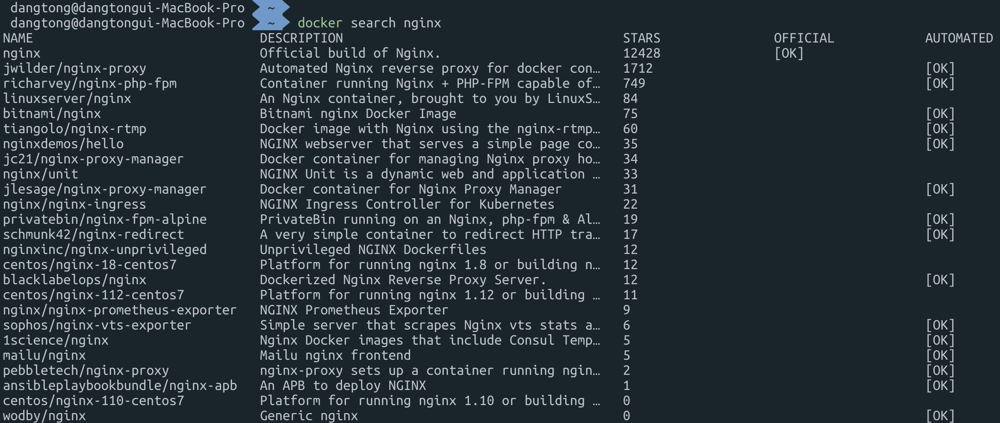
3.2.3 도커 이미지 다운로드
]
nodejs 이미지를 설치해봅니다. 최신 안정버전인 12.14 버전을 설치 합니다.
sudo docker pull nodejs:latest # 최신버전 다운로드 sudo docker pull nodejs:12.14.0 # 특정버전 다운로드 sudo docker pull -a nodejs # 모든버전 다운로드
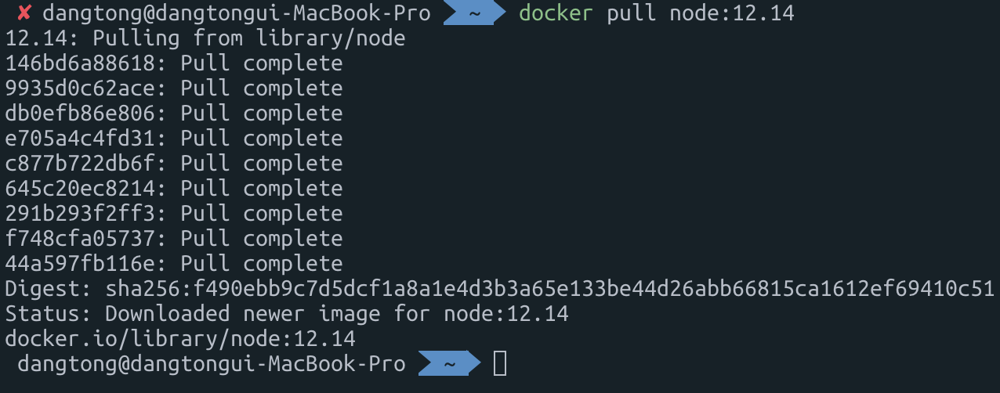
3.2.4 도커 이미지 목록 보기
docker image list docker image ls docker images
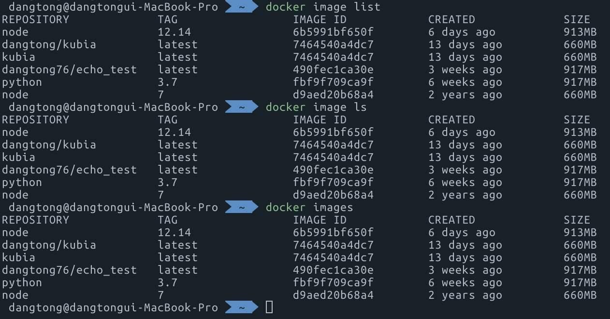
3.3 도커 이미지 생성 하기
3.3.1 서비스를 위한 Application 코드 작성
hostname_finder 라는 폴더를 만들고 그 아래 main.go 및 Dockerfiles 2개 파일을 작성 합니다.
먼저 vi 또는 gedit 를 실행해서 아래 파일을 main.go 라는 이름 으로 작성 합니다.
package main import ( "fmt" "os" "log" "net/http" ) func handler(w http.ResponseWriter, r *http.Request){ name, err := os.Hostname() if err != nil { panic(err) } fmt.Fprintln(w,"hostname:", name) } func main() { fmt.Fprintln(os.Stdout,"Starting GoApp Server......") http.HandleFunc("/",handler) log.Fatal(http.ListenAndServe(":8080",nil)) }
3.3.2 이미지 생성을 위한 Dockerfile 작성
FROM golang:1.11-alpine AS build WORKDIR /src/ COPY main.go go.* /src/ RUN CGO_ENABLED=0 go build -o /bin/demo FROM scratch COPY --from=build /bin/demo /bin/demo ENTRYPOINT ["/bin/demo"]
3.3.3 컨테이너 이미지 생성
hostname_finder 라는 폴더 안에서 아래 명령어를 실행 합니다.
docker build -t goapp .
. 은 현재 디렉토리서 Dockerfile 참조해서 first-container 라는 이미지를 생성 합니다.
[출력]
Sending build context to Docker daemon 3.072kB Step 1/7 : FROM golang:1.11-alpine AS build ---> e116d2efa2ab Step 2/7 : WORKDIR /src/ ---> Using cachedocker ---> c3210d8eb11f Step 3/7 : COPY main.go go.* /src/ ---> ef55118ea78c Step 4/7 : RUN CGO_ENABLED=0 go build -o /bin/demo ---> Running in e557730bf11c Removing intermediate container e557730bf11c ---> d55bd9bd3f81 Step 5/7 : FROM scratch ---> Step 6/7 : COPY --from=build /bin/demo /bin/demo ---> bb4b1250a05e Step 7/7 : ENTRYPOINT ["/bin/demo"] ---> Running in 4419d56988aa Removing intermediate container 4419d56988aa ---> 36f5c919e3b8 Successfully built 36f5c919e3b8 Successfully tagged goapp:latest
이미지가 생성 되었는지 명령어를 통해 확인 합니다.
docker images
[출력]
REPOSITORY TAG IMAGE ID CREATED SIZE <none> <none> d55bd9bd3f81 About a minute ago 325MB goapp latest 36f5c919e3b8 About a minute ago 6.51MB <none> <none> 1c688e9c7e3c 3 days ago 325MB <none> <none> 9b60c66a5b82 3 days ago 6.51MB <none> <none> 7fc44021a96f 3 days ago 325MB <none> <none> 2caa0c2ac791 3 days ago 325MB <none> <none> c46d81105b65 3 days ago 6.51MB <none> <none> 2d78705fb4ae 3 days ago 312MB
3.4 도커 컨테이너 시작 및 서비스 확인
3.4.1 도커 컨테이너 시작
docker run --name goapp-project -p 8080:8080 -d goapp docker run -it --name goapp-project -p 8080:8080 -d goapp /bin/bash
--name : 실행한 도커 컨테이너의 이름 지정
-p : 포트 맵핑 정보 localhost 와 컨테이너 포트를 맵핑 합니다.
-d : Docker 컨테이너를 백그라운드로 수행하고 컨테이너 ID를 출력 합니다.
-i : STDIN 계속 interactive 모드로 유지
3.4.2 도커 컨테이스 서비스 확인
curl 명령어를 통해 정상적인 서비스 수행 여부를 확인 합니다.
curl localhost:8080
[출력]
hostname: 96fc3a5eb914
3.4.3 도커 프로세서 확인
docker ps
[출력]
CONTAINER ID IMAGE COMMAND CREATED STATUS PORTS NAMES 96fc3a5eb914 goapp "/bin/demo" 43 seconds ago Up 42 seconds 0.0.0.0:8080->8080/tcp goapp-project
3.4.4 프로세서 상세 정보 출력
docker inspect goapp-project
[출력]
[
{
"Id": "96fc3a5eb914c58ed83e088681d53a46188edeaab061ff2de0b9852e9dd276c9",
"Created": "2020-01-10T04:32:12.269012485Z",
"Path": "/bin/demo",
"Args": [],
"State": {
"Status": "running",
"Running": true,
"Paused": false,
"Restarting": false,
"OOMKilled": false,
"Dead": false,
"Pid": 31285,
"ExitCode": 0,
"Error": "",
"StartedAt": "2020-01-10T04:32:12.902395362Z",
"FinishedAt": "0001-01-01T00:00:00Z"
},
"Image": "sha256:36f5c919e3b88f1c991eda67d96e62fe02b763182e44f19fb78b2fc055165f3d",
"ResolvConfPath": "/var/lib/docker/containers/96fc3a5eb914c58ed83e088681d53a46188edeaab061ff2de0b9852e9dd276c9/resolv.conf",
"HostnamePath": "/var/lib/docker/containers/96fc3a5eb914c58ed83e088681d53a46188edeaab061ff2de0b9852e9dd276c9/hostname",
"HostsPath": "/var/lib/docker/containers/96fc3a5eb914c58ed83e088681d53a46188edeaab061ff2de0b9852e9dd276c9/hosts",
"LogPath": "/var/lib/docker/containers/96fc3a5eb914c58ed83e088681d53a46188edeaab061ff2de0b9852e9dd276c9/96fc3a5eb914c58ed83e088681d53a46188edeaab061ff2de0b9852e9dd276c9-json.log",
3.4.5 Docker 컨테이너 접속
# docker 컨테이너 접속 docker exec -it goapp-project bash # docker 외부에서 컨테이너에 명령수행 (ls 명령 수행) docker exec goapp-project ls
-i 또는 --interactive : STDIN을 오픈한 상태로 인터랙티브 모드상태
-t 또는 --tty : terminal 모드
container 이름이 보이지 않고 ID 만 기본적으로 보입니다. 컨테이너 이름을 출력하려면 아래 명령어를 수행 하면 됩니다.
docker ps --format "{{.Names}}"
3.4.6 도커 인스턴스 중단 및 삭제
docker stop goapp-project docker rm goapp-project
3.5. 도커 이미지를 도커 허브에 업로드
3.5.1 도커 허브양식에 맞게 tag 수정하기
docker tag goapp dangtong/goapp
[출력]
REPOSITORY TAG IMAGE ID CREATED SIZE dangtong/goapp latest 12e9a84d9e23 3 days ago 6.51MB goapp latest 12e9a84d9e23 3 days ago 6.51MB
dangtong/firstapp 과 first-container 의 image ID 가 같은 것을 확인 할 수 있습니다.
사실 하나의 이미지를 서로 다른 TAGID 로 공유 하는 것입니다. 디스크 공간이 늘어나지 않습니다.
3.5.2 도커 허브에 이미지 업로드 하기
docker login --username dangtong docker push dangtong/goapp
[출력]
The push refers to repository [docker.io/dangtong/goapp] cc282a374c26: Pushed latest: digest: sha256:b18b5ff03599893a7361feda054ebe26de61a71f019dc8725bb33d87f2115968 size: 528
도커 허브에 로그인 하게 되면 아래와 같이 goapp 이미지가 업로드 된것을 확인 할 수 있습니다. 이제 인터넷만 연결 되면 어디서는 자신이 만든 이미지로 컨테이너를 실행 할 수 있습니다.
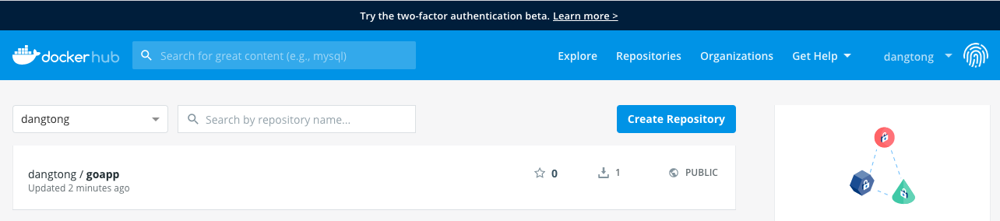
3.5.3 도커 허브의 이미지로 컨테이너 실행
docker hub 에 있는 이미지를 로딩하여 컨테이너 생성
docker run --name goapp-project -p 8080:8080 -d dangtong/goapp
docker ps
[출력]
CONTAINER ID IMAGE COMMAND CREATED STATUS PORTS NAMES 0938068f8709 dangtong/goapp "/bin/demo" 5 seconds ago Up 4 seconds 0.0.0.0:8080->8080/tcp goapp-project
현재 서비스에 접속하여 확인
curl http://localhost:8080
hostname: 0938068f8709
[Exercise #1]
-
서버 호스트명을 출력하는 node.js 프로그램을 만드세요
-
해당 소스로 node 버전 7 기반으로 서비스 하는 Docker file을 만들고 이미지를 build 하세요
-
tag 명령을 이용해서 docker hub 에 올릴수 있도록 이름을 바꾸세요
-
docker login 후에 docker hub 에 업로드하여 실제 업로드가 되었는지 확인하세요
이름은 username/nodejs-app 으로 하세요
- node.js 프로그램
const http = require('http'); const os = require('os'); console.log("Kubia server starting..."); var handler = function(request, response) { console.log("Received request from " + request.connection.remoteAddress); response.writeHead(200); response.end("You've hit " + os.hostname() + "\n"); }; var www = http.createServer(handler); www.listen(8080);
- Dcokerfile
# FROM 으로 BASE 이미지 로드 FROM node:7 # ADD 명령어로 이미지에 app.js 파일 추가 ADD app.js /app.js # ENTRYPOINT 명령어로 node 를 실행하고 매개변수로 app.js 를 전달 ENTRYPOINT ["node", "app.js"]
4. 쿠버네티스 간단하게 맛보기
4.1 도커 허브 이미지로 컨테이너 생성 및 확인
- 컨테이너 생성 : run/v1 으로 수행 합니다.
{bash}
# POD 및 Replication Controller 생성 (향후 버전에서 deprecated 될 예정)
$ kubectl run goapp-project --image=dangtong/goapp --port=8080 --generator=run/v1
# POD 만 생성
$ kubectl run goapp-project --image=dangtong/goapp --port=8080 --generator=run-pod/v1
generator 를 run/v1 으로 수행 할 경우 내부적으로 goapp-project-{random-String} 이라는 컨테이너를 만들면서 goapp-project- 이름의 replication controller 도 생기게 됩니다.
- Generator 의 종류 : run-pod/v1 외에 모두 deprecated 될 예정
| Resource | API group | kubectl command |
|---|---|---|
| Pod | v1 | kubectl run --generator=run-pod/v1 |
| ReplicationController (deprecated) | v1 | kubectl run --generator=run/v1 |
| Deployment (deprecated) | extensions/v1beta1 | kubectl run --generator=deployment/v1beta1 |
| Deployment (deprecated) | apps/v1beta1 | kubectl run --generator=deployment/apps.v1beta1 |
| Job (deprecated) | batch/v1 | kubectl run --generator=job/v1 |
| CronJob (deprecated) | batch/v2alpha1 | kubectl run --generator=cronjob/v2alpha1 |
| CronJob (deprecated) | batch/v1beta1 | kubectl run --generator=cronjob/v1beta1 |
- 컨테이너 확인
{bash}
$ kubectl get pods
$ kubectl get rc
```{text} $ kubectl get pods NAME READY STATUS RESTARTS AGE goapp-project-bcv5q 1/1 Running 0 2m26s
$ kubectl get rc NAME DESIRED CURRENT READY AGE goapp-project 1 1 1 8m58s ```
아래 명령어를 추가적으로 수행해 보세요
kubectl get pods -o wide kubectl describe pod goapp-project-bcv5q
- k8s 서비스 생성
{bash}
$ kubectl expose rc goapp-project --type=LoadBalancer --name goapp-http
{text}
service/firstapp-http exposed
- 생성한 서비스 조회
{bash}
$ kubectl get services
{text}
NAME TYPE CLUSTER-IP EXTERNAL-IP PORT(S) AGE
goapp-http LoadBalancer 10.96.225.172 <pending> 8080:31585/TCP 104s
kubernetes ClusterIP 10.96.0.1 <none> 443/TCP 14d
- 서비스 테스트 (여러번 수행)
{bash}
curl http://10.96.225.172:8080
[출력]
{text}
hostname: goapp-project-bcv5q
hostname: goapp-project-bcv5q
hostname: goapp-project-bcv5q
hostname: goapp-project-bcv5q
- replication controller 를 통한 scale-out 수행
{bash}
kubectl scale rc goapp-project --replicas=3
[출력]
{txt}
replicationcontroller/goapp-project scaled
- Scale-Out 결과 확인
{bash}
kubectl get pod
[출력]
{txt}
NAME READY STATUS RESTARTS AGE
goapp-project-bcv5q 1/1 Running 0 16m
goapp-project-c8hml 1/1 Running 0 26s
goapp-project-r7kx5 1/1 Running 0 26s
- 서비스 테스트 (여러번 수행)
{bash}
curl http://10.96.225.172:8080
[출력]
{txt}
NAME READY STATUS RESTARTS AGE
goapp-project-bcv5q 1/1 Running 0 16m
goapp-project-c8hml 1/1 Running 0 26s
goapp-project-r7kx5 1/1 Running 0 26s
- POD 삭제
Replication Controller 를 통해 생성된 POD 는 개별 POD 가 삭제 되지 않습니다. Replication Controller 자체를 삭제 해야 합니다.
kubectl delete rc goapp-project
5. PODS
5.1 POD 기본
5.1 POD 설정을 yaml 파일로 가져오기
kubectl get pod goapp-project-bcv5q -o yaml kubectl get po goapp-project-bcv5q -o json
크게 metadata, spec, status 항목으로 나누어 집니다.
[출력 - yaml]
apiVersion: v1 kind: Pod metadata: creationTimestamp: "2020-01-10T07:37:49Z" generateName: goapp-project- labels: run: goapp-project name: goapp-project-bcv5q namespace: default ownerReferences: - apiVersion: v1 blockOwnerDeletion: true controller: true kind: ReplicationController name: goapp-project uid: e223237f-17e2-44f4-aaee-07e8ff4592b2 resourceVersion: "3082141" selfLink: /api/v1/namespaces/default/pods/goapp-project-bcv5q uid: 72bebcbd-8e6e-4906-9f66-1c3821fa49ec spec: containers: - image: dangtong/goapp imagePullPolicy: Always name: goapp-project ports: - containerPort: 8080 protocol: TCP resources: {} terminationMessagePath: /dev/termination-log terminationMessagePolicy: File volumeMounts: - mountPath: /var/run/secrets/kubernetes.io/serviceaccount name: default-token-qz4fh readOnly: true dnsPolicy: ClusterFirst enableServiceLinks: true nodeName: worker01.sas.com priority: 0 restartPolicy: Always schedulerName: default-scheduler securityContext: {} serviceAccount: default serviceAccountName: default terminationGracePeriodSeconds: 30 tolerations: - effect: NoExecute key: node.kubernetes.io/not-ready operator: Exists tolerationSeconds: 300 - effect: NoExecute key: node.kubernetes.io/unreachable operator: Exists tolerationSeconds: 300 volumes: - name: default-token-qz4fh secret: defaultMode: 420 secretName: default-token-qz4fh status: conditions: - lastProbeTime: null lastTransitionTime: "2020-01-10T07:37:49Z" status: "True" type: Initialized - lastProbeTime: null lastTransitionTime: "2020-01-10T07:37:55Z" status: "True" type: Ready - lastProbeTime: null lastTransitionTime: "2020-01-10T07:37:55Z" status: "True" type: ContainersReady - lastProbeTime: null lastTransitionTime: "2020-01-10T07:37:49Z" status: "True" type: PodScheduled containerStatuses: - containerID: docker://de3418e51fea7f7a19e7b1d6ff5a4a6f386f337578838e6f1ec0589275ca6f48 image: dangtong/goapp:latest imageID: docker-pullable://dangtong/goapp@sha256:e5872256539152aecd2a8fb1f079e132a6a8f247c7a2295f0946ce2005e36d05 lastState: {} name: goapp-project ready: true restartCount: 0 started: true state: running: startedAt: "2020-01-10T07:37:55Z" hostIP: 192.168.56.103 phase: Running podIP: 10.40.0.2 podIPs: - ip: 10.40.0.2 qosClass: BestEffort startTime: "2020-01-10T07:37:49Z"
5.2 POD 생성을 위한 YAML 파일 만들기
아래와 같이 goapp.yaml 파일을 만듭니다.
apiVersion: v1 kind: Pod metadata: name: goapp-pod spec: containers: - image: dangtong/goapp name: goapp-container ports: - containerPort: 8080 protocol: TCP
ports 정보를 yaml 파일에 기록 하지 않으면 아래 명령어로 향후에 포트를 할당해도 됩니다.
kubectl port-forward goapp-pod 8080:8080
5.3 YAML 파일을 이용한 POD 생성 및 확인
$ kubectl create -f goapp.yaml
[output]
pod/goapp-pod created
$ kubectl get pod
[output]
NAME READY STATUS RESTARTS AGE goapp-pod 1/1 Running 0 12m goapp-project-bcv5q 1/1 Running 0 41m goapp-project-c8hml 1/1 Running 0 25m goapp-project-r7kx5 1/1 Running 0 25m
5.4 POD 및 Container 로그 확인
- POD 로그 확인
kubectl logs goapp-pod
[output]
Starting GoApp Server......
- Container 로그 확인
kubectl logs goapp-pod -c goapp-container
[output]
Starting GoApp Server......
현재 1개 POD 내에 Container 가 1이기 때문에 출력 결과는 동일 합니다. POD 내의 Container 가 여러개 일 경우 모든 컨테이너의 표준 출력이 화면에 출력됩니다.
[Exercise #2]
- Yaml 파일로 nginx 11.1 버전기반의 이미지를 사용해 nginx-app 이라는 이름의 Pod 를 만드세요(port : 8080)
- curl 명령어르 사용해. Nginx 서비스에 접속
- nginx Pod 의 정보를 yaml 파일로 출력 하세요
- nginx-app Pod 를 삭제 하세요
6. Lable
6.1 Lable 정보를 추가해서 POD 생성하기
- goapp-with-lable.yaml 이라 파일에 아래 내용을 추가 하여 작성 합니다.
apiVersion: v1 kind: Pod metadata: name: goapp-pod2 labels: env: prod spec: containers: - image: dangtong/goapp name: goapp-container ports: - containerPort: 8080 protocol: TCP
- yaml 파일을 이용해 pod 를 생성 합니다.
$ kubectl create -f ./goapp-with-lable.yaml
[output]
pod/goapp-pod2 created
- 생성된 POD를 조회 합니다.
kubectl get po --show-labels
[output]
NAME READY STATUS RESTARTS AGE LABELS goapp-pod 1/1 Running 0 160m <none> goapp-pod2 1/1 Running 0 3m53s env=prod goapp-project-bcv5q 1/1 Running 0 9h run=goapp-project goapp-project-c8hml 1/1 Running 0 9h run=goapp-project goapp-project-r7kx5 1/1 Running 0 9h run=goapp-project
- Lable 태그를 출력 화면에 컬럼을 분리해서 출력
kubectl get pod -L env
[output]
NAME READY STATUS RESTARTS AGE ENV goapp-pod 1/1 Running 0 161m goapp-pod2 1/1 Running 0 5m19s prod goapp-project-bcv5q 1/1 Running 0 9h goapp-project-c8hml 1/1 Running 0 9h goapp-project-r7kx5 1/1 Running 0 9h
- Lable을 이용한 필터링 조회
kubectl get pod -l env=prod
[output]
NAME READY STATUS RESTARTS AGE goapp-pod2 1/1 Running 0 39h
6.2 생성된 POD 로 부터 yaml 파일 얻기
kubectl get pod goapp-pod -o yaml
[output]
apiVersion: v1 kind: Pod metadata: creationTimestamp: "2020-01-10T08:07:04Z" name: goapp-pod namespace: default resourceVersion: "3086366" selfLink: /api/v1/namespaces/default/pods/goapp-pod uid: 18cf0ed0-be56-4b54-869c-4473117800b1 spec: containers: - image: dangtong/goapp imagePullPolicy: Always name: goapp-container ports: - containerPort: 8080 protocol: TCP resources: {} terminationMessagePath: /dev/termination-log terminationMessagePolicy: File volumeMounts: - mountPath: /var/run/secrets/kubernetes.io/serviceaccount name: default-token-qz4fh readOnly: true dnsPolicy: ClusterFirst enableServiceLinks: true nodeName: worker02.sas.com priority: 0 restartPolicy: Always schedulerName: default-scheduler securityContext: {} serviceAccount: default serviceAccountName: default terminationGracePeriodSeconds: 30 tolerations: - effect: NoExecute key: node.kubernetes.io/not-ready operator: Exists tolerationSeconds: 300 - effect: NoExecute key: node.kubernetes.io/unreachable operator: Exists tolerationSeconds: 300 volumes: - name: default-token-qz4fh secret: defaultMode: 420 secretName: default-token-qz4fh status: conditions: - lastProbeTime: null lastTransitionTime: "2020-01-10T08:07:04Z" status: "True" type: Initialized - lastProbeTime: null lastTransitionTime: "2020-01-10T08:07:09Z" status: "True" type: Ready - lastProbeTime: null lastTransitionTime: "2020-01-10T08:07:09Z" status: "True" type: ContainersReady - lastProbeTime: null lastTransitionTime: "2020-01-10T08:07:04Z" status: "True" type: PodScheduled containerStatuses: - containerID: docker://d76af359c556c60d3ac1957d7498513f42ace14998c763456190274a3e4a1d5e image: dangtong/goapp:latest imageID: docker-pullable://dangtong/goapp@sha256:e5872256539152aecd2a8fb1f079e132a6a8f247c7a2295f0946ce2005e36d05 lastState: {} name: goapp-container ready: true restartCount: 0 started: true state: running: startedAt: "2020-01-10T08:07:08Z" hostIP: 10.0.2.5 phase: Running podIP: 10.32.0.4 podIPs: - ip: 10.32.0.4 qosClass: BestEffort startTime: "2020-01-10T08:07:04Z"
6.3 Lable을 이용한 POD 스케줄링
- 노드목록 조회
kubectl get nodes
[output]
NAME STATUS ROLES AGE VERSION master.sas.com Ready master 16d v1.17.0 worker01.sas.com Ready <none> 16d v1.17.0 worker02.sas.com Ready <none> 16d v1.17.0
- 특정 노드에 레이블 부여
kubectl label node worker02.sas.com memsize=high
- 레이블 조회 필터 사용하여 조회
kubectl get nodes -l memsize=high
[output]
NAME STATUS ROLES AGE VERSION worker02.sas.com Ready <none> 17d v1.17.0
- 특정 노드에 신규 POD 스케줄링
아래 내용과 같이 goapp-label-node.yaml 파을을 작성 합니다.
apiVersion: v1 kind: Pod metadata: name: goapp-pod-memhigh spec: nodeSelector: memsize: "high" containers: - image: dangtong/goapp name: goapp-container-memhigh
- YAML 파일을 이용한 POD 스케줄링
kubectl create -f ./goapp-lable-node.yaml
[output]
pod/goapp-pod-memhigh created
- 생성된 노드 조회
kubectl get pod -o wide
[output]
NAME READY STATUS RESTARTS AGE IP NODE NOMINATED NODE READINESS GATES goapp-pod-memhigh 1/1 Running 0 17s 10.32.0.5 worker02.sas.com <none> <none>
7. Annotation
7.1 POD 에 Annotation 추가하기
kubectl annotate pod goapp-pod-memhigh maker="dangtong" team="k8s-team"
[output]
pod/goapp-pod-memhigh annotated
7.2 Annotation 확인하기
- YAML 파일을 통해 확인하기
kubectl get po goapp-pod-memhigh -o yaml
[output]
kind: Pod metadata: annotations: maker: dangtong team: k8s-team creationTimestamp: "2020-01-12T15:25:05Z" name: goapp-pod-memhigh namespace: default resourceVersion: "3562877" selfLink: /api/v1/namespaces/default/pods/goapp-pod-memhigh uid: a12c35d7-d0e6-4c01-b607-cccd267e39ec spec: containers:
- DESCRIBE 를 통해 확인하기
kubectl describe pod goapp-pod-memhigh
[output]
Name: goapp-pod-memhigh Namespace: default Priority: 0 Node: worker02.sas.com/10.0.2.5 Start Time: Mon, 13 Jan 2020 00:25:05 +0900 Labels: <none> Annotations: maker: dangtong team: k8s-team Status: Running IP: 10.32.0.5
7.3 Annotation 삭제
kubectl annotate pod goapp-pod-memhigh maker=make- team-
[[Exercise #3]]
- Bitnami/apache 이미지로 Pod 를 만들고 tier=FronEnd, app=apache 라벨 정보를 포함하세요
- Pod 정보를 출력 할때 라벨을 함께 출력 하세요
- app=apache 라벨틀 가진 Pod 만 조회 하세요
- 만들어진 Pod에 env=dev 라는 라벨 정보를 추가 하세요
- created_by=kevin 이라는 Annotation을 추가 하세요
- 만들어진 Pod (app=nginx) 에 rel=beta 라벨을 추가 하세요
- apache Pod를 삭제 하세요
8. Namespace
8.1 네임스페이스 조회
kubectl get namespace
kubectl get ns 와 동일함
[output]
NAME STATUS AGE default Active 17d kube-node-lease Active 17d kube-public Active 17d kube-system Active 17d
8.2 특정 네임스페이스의 POD 조회
kubectl get pod --namespace kube-system
kubectl get pod -n kube-system 과 동일함
[output]
coredns-6955765f44-glcdc 1/1 Running 0 17d coredns-6955765f44-h7fbb 1/1 Running 0 17d etcd-master.sas.com 1/1 Running 1 17d kube-apiserver-master.sas.com 1/1 Running 1 17d kube-controller-manager-master.sas.com 1/1 Running 1 17d kube-proxy-gm44f 1/1 Running 1 17d kube-proxy-ngqr6 1/1 Running 0 17d kube-proxy-wmq7d 1/1 Running 0 17d kube-scheduler-master.sas.com 1/1 Running 1 17d weave-net-2pm2x 2/2 Running 0 17d weave-net-4wksv 2/2 Running 0 17d weave-net-7j7mn 2/2 Running 0 17d
8.3 YAML 파일을 이용한 네임스페이스 생성
- YAML 파일 작성 : first-namespace.yaml 이름으로 파일 작성
apiVersion: v1 kind: Namespace metadata: name: first-namespace
- YAML 파일을 이용한 네이스페이스 생성
kubectl create -f first-namespace.yaml
[output]
namespace/first-namespace created
- 생성된 네임스페이스 확인
kubectl get namespace kubectl get ns
[output]
NAME STATUS AGE default Active 17d first-namespace Active 5s kube-node-lease Active 17d kube-public Active 17d kube-system Active 17d
kubectl create namespace first-namespace 와 동일 합니다.
8.4 특정 네임스페이스에 POD 생성
- first-namespace 에 goapp 생성
kubectl create -f goapp.yaml -n first-namespace
[output]
pod/goapp-pod created
- 생성된 POD 확인하기
kubectl get pod -n first-namespace
[output]
NAME READY STATUS RESTARTS AGE goapp-pod 1/1 Running 0 12h
8.5 POD 삭제
'kubectl' delete pod goapp-pod-memhigh
kubectl delete pod goapp-pod
kubectl delete pod goapp-pod -n first-namespace
현재 네임스페이스 에서 존재 하는 모든 리소스를 삭제하는 명령은 아래와 같습니다.
kubectl delete all --all
현재 네임스페이스를 설정하고 조회 하는 명령은 아래와 같습니다.
```shell
네임스페이스 설정
kubectl config set-context --current --namespace=
확인
kubectl config view --minify | grep namespace: ```
[[ Exercise #4 ]]
-
쿠버네티스 클러스터에 몇개의 네임스페이가 존재 하나요?
-
my-dev 라는 네임스페이를 생성하고 nginx Pod를 배포 하세요
9. kubectl 기본 사용법
9.1 단축형 키워드 사용하기
kubectl get po # PODs kubectl get svc # Service kubectl get rc # Replication Controller kubectl get deploy # Deployment kubectl get ns # Namespace kubectl get no # Node kubectl get cm # Configmap kubectl get pv # PersistentVolumns
9.2 도움말 보기
kubectl -h
kubectl controls the Kubernetes cluster manager. Find more information at: https://kubernetes.io/docs/reference/kubectl/overview/ Basic Commands (Beginner): create Create a resource from a file or from stdin. expose Take a replication controller, service, deployment or pod and expose it as a new Kubernetes Service run Run a particular image on the cluster set Set specific features on objects Basic Commands (Intermediate): explain Documentation of resources get Display one or many resources edit Edit a resource on the server delete Delete resources by filenames, stdin, resources and names, or by resources and label selector Deploy Commands:
kubectl get -h
Display one or many resources Prints a table of the most important information about the specified resources. You can filter the list using a label selector and the --selector flag. If the desired resource type is namespaced you will only see results in your current namespace unless you pass --all-namespaces. Uninitialized objects are not shown unless --include-uninitialized is passed. By specifying the output as 'template' and providing a Go template as the value of the --template flag, you can filter the attributes of the fetched resources. Use "kubectl api-resources" for a complete list of supported resources. Examples: # List all pods in ps output format. kubectl get pods # List all pods in ps output format with more information (such as node name). kubectl get pods -o wide
9.3 리소스 정의에 대한 도움말
kubectl explain pods
KIND: Pod VERSION: v1 DESCRIPTION: Pod is a collection of containers that can run on a host. This resource is created by clients and scheduled onto hosts. FIELDS: apiVersion <string> APIVersion defines the versioned schema of this representation of an object. Servers should convert recognized schemas to the latest internal value, and may reject unrecognized values. More info: https://git.k8s.io/community/contributors/devel/sig-architecture/api-conventions.md#resources kind <string> Kind is a string value representing the REST resource this object represents. Servers may infer this from the endpoint the client submits requests to. Cannot be updated. In CamelCase. More info: https://git.k8s.io/community/contributors/devel/sig-architecture/api-conventions.md#types-kinds metadata <Object> Standard object's metadata. More info: https://git.k8s.io/community/contributors/devel/sig-architecture/api-conventions.md#metadata spec <Object> Specification of the desired behavior of the pod. More info: https://git.k8s.io/community/contributors/devel/sig-architecture/api-conventions.md#spec-and-status status <Object> Most recently observed status of the pod. This data may not be up to date. Populated by the system. Read-only. More info: https://git.k8s.io/community/contributors/devel/sig-architecture/api-conventions.md#spec-and-status
9.4 리소스 감시하기
- Kube-system 네임스페이스에 있는 모든 pod에 대해 모니터링 합니다.
kubectl get pods --watch -n kube-system
root@master:~# k get pods --watch -n kube-system NAME READY STATUS RESTARTS AGE coredns-6955765f44-glcdc 1/1 Running 0 19d coredns-6955765f44-h7fbb 1/1 Running 0 19d etcd-master.sas.com 1/1 Running 1 19d kube-apiserver-master.sas.com 1/1 Running 1 19d kube-controller-manager-master.sas.com 1/1 Running 1 19d kube-proxy-gm44f 1/1 Running 1 19d kube-proxy-ngqr6 1/1 Running 0 19d kube-proxy-wmq7d 1/1 Running 0 19d kube-scheduler-master.sas.com 1/1 Running 1 19d weave-net-2pm2x 2/2 Running 0 19d weave-net-4wksv 2/2 Running 0 19d weave-net-7j7mn 2/2 Running 0 19d ...
9.5 리소스 비교하기
kubectl diff -f goapp.yaml
9.6 kubectx 및 kubens 사용하기
현재 컨텍스트 및 네임스페이스를 확인하고 전환 할때 손쉽게 사용 할수 있는 도구
9.6.1 kubectx 및 kubens 설치
git clone https://github.com/ahmetb/kubectx.git ~/.kubectx COMPDIR=$(pkg-config --variable=completionsdir bash-completion) ln -sf ~/.kubectx/completion/kubens.bash $COMPDIR/kubens ln -sf ~/.kubectx/completion/kubectx.bash $COMPDIR/kubectx cat << FOE >> ~/.bashrc #kubectx and kubens export PATH=~/.kubectx:\$PATH FOE
9.6.2 kubectx 및 kubens 사용
- kubectx 사용
kubectx kubectx <변경하고 싶은 컨텍스트 이름>
- kubens 사용
현재 사용중인 네임스페이스를 조회 합니다. 현재 사용중인 네이스페이스는 하이라이트 됩니다.
kubens
default first-namespace kube-node-lease kube-public kube-system
Kube-system 네이스페이스로 전환 해봅니다.
kubens kube-system
Context "kubernetes-admin@kubernetes" modified. Active namespace is "kube-system".
pod 조회 명령을 내리면 아래와 같이 kube-system 네임스페이스의 pod 들이 조회 됩니다.
kubectl get po
NAME READY STATUS RESTARTS AGE coredns-6955765f44-glcdc 1/1 Running 0 34d coredns-6955765f44-h7fbb 1/1 Running 0 34d etcd-master.sas.com 1/1 Running 1 34d kube-apiserver-master.sas.com 1/1 Running 1 34d kube-controller-manager-master.sas.com 1/1 Running 1 34d kube-proxy-gm44f 1/1 Running 1 34d kube-proxy-ngqr6 1/1 Running 0 34d kube-proxy-wmq7d 1/1 Running 0 34d kube-scheduler-master.sas.com 1/1 Running 1 34d weave-net-2pm2x 2/2 Running 0 34d weave-net-4wksv 2/2 Running 0 34d weave-net-7j7mn 2/2 Running 0 34d
9.7 kubernetes 컨텍 및 네임스페이스 표시하기
kube-ps1을 다운로드 하여 /usr/local/kube-ps1 설치 하고 .bashrc 파일에 아래와 같이 설정 합니다. 링크
source /usr/local/kube-ps1/kube-ps1.sh PS1='[\u@\h \W $(kube_ps1)]\$ '
[root@master ~ (⎈ |kubernetes-admin@kubernetes:kube-public)]#
10. Liveness probes
liveness prove는 Pod에 지정된 주소에 Health Check 를 수행하고 실패할 경우 Pod를 다시 시작 합니다.
이때 중요한 점은 단순히 다시 시작만 하는 것이 아니라, 리포지토리로 부터 이미지를 다시 받아 Pod 를 다시 시작 합니다.
아래 내용으로.
apiVersion: v1 kind: Pod metadata: labels: test: liveness name: liveness-http spec: containers: - name: liveness image: k8s.gcr.io/liveness args: - /server livenessProbe: httpGet: path: /healthz port: 8080 httpHeaders: - name: Custom-Header value: Awesome initialDelaySeconds: 3 periodSeconds: 3
K8s.gcr.io/liveness 이미지는 liveness 테스트를 위해 만들어진 이미지 입니다. Go 언어로 작성 되었으며, 처음 10초 동안은 정상적인 서비스를 하지만, 10초 후에는 에러를 발생 시킵니다. 자세한 사항은 URL 을 참고 하세요
10.1 Pod 생성
kubectl create -f ./liveness-probe-pod.yaml
10.2 Pod 확인
kubectl get pod
아래
NAME READY STATUS RESTARTS AGE liveness-http 1/1 Running 0 5s NAME READY STATUS RESTARTS AGE liveness-http 1/1 Running 1 26s NAME READY STATUS RESTARTS AGE liveness-http 1/1 Running 3 68s NAME READY STATUS RESTARTS AGE liveness-http 0/1 CrashLoopBackOff 3 81s NAME READY STATUS RESTARTS AGE liveness-http 0/1 CrashLoopBackOff 5 2m50s
10.3 Pod 로그 이벤트 확인
kubectl describe pod liveness-http
Name: liveness-http Namespace: default Priority: 0 Node: worker02.acorn.com/192.168.56.110 Start Time: Wed, 01 Apr 2020 05:54:29 +0000 Labels: test=liveness Annotations: <none> Status: Running IP: 10.36.0.1 IPs: IP: 10.36.0.1 Containers: liveness: Container ID: docker://0f1ba830b830d5879fe99776cd0db5f3678bf52a11e3ccb1a1e9c65460957817 Image: k8s.gcr.io/liveness Image ID: docker-pullable://k8s.gcr.io/liveness@sha256:1aef943db82cf1370d0504a51061fb082b4d351171b304ad194f6297c0bb726a Port: <none> Host Port: <none> Args: /server State: Running Started: Wed, 01 Apr 2020 06:01:15 +0000 Last State: Terminated Reason: Error Exit Code: 2 Started: Wed, 01 Apr 2020 05:58:16 +0000 Finished: Wed, 01 Apr 2020 05:58:32 +0000 Ready: True Restart Count: 7 Liveness: http-get http://:8080/healthz delay=3s timeout=1s period=3s #success=1 #failure=3 Environment: <none> Mounts: /var/run/secrets/kubernetes.io/serviceaccount from default-token-zshgs (ro) Conditions: Type Status Initialized True Ready True ContainersReady True PodScheduled True Volumes: default-token-zshgs: Type: Secret (a volume populated by a Secret) SecretName: default-token-zshgs Optional: false QoS Class: BestEffort Node-Selectors: <none> Tolerations: node.kubernetes.io/not-ready:NoExecute for 300s node.kubernetes.io/unreachable:NoExecute for 300s Events: Type Reason Age From Message ---- ------ ---- ---- ------- Normal Scheduled <unknown> default-scheduler Successfully assigned default/liveness-http to worker02.acorn.com Normal Pulled 6m14s (x3 over 6m53s) kubelet, worker02.acorn.com Successfully pulled image "k8s.gcr.io/liveness" Normal Created 6m14s (x3 over 6m52s) kubelet, worker02.acorn.com Created container liveness Normal Started 6m14s (x3 over 6m52s) kubelet, worker02.acorn.com Started container liveness Normal Pulling 5m55s (x4 over 6m54s) kubelet, worker02.acorn.com Pulling image "k8s.gcr.io/liveness" Warning Unhealthy 5m55s (x9 over 6m40s) kubelet, worker02.acorn.com Liveness probe failed: HTTP probe failed with statuscode: 500 Normal Killing 5m55s (x3 over 6m34s) kubelet, worker02.acorn.com Container liveness failed liveness probe, will be restarted Warning BackOff 108s (x17 over 5m36s) kubelet, worker02.acorn.com Back-off restarting failed container
로그이벤트를 보면 Liveness Probe 가 실패해서 컨테이너를 재가동 하는 메시지가 보입니다.
뿐만아니라, 재가동 시에서 Pull image 를 통해 이미지를 다시 가져 와서 재가동 시키는 것을 볼 수 있습니다.
11. Replication Controller
11.1 Replication Controller 생성
아래와 같이 template를 작성합니다.
apiVersion: v1 kind: ReplicationController metadata: name: goapp-rc spec: replicas: 3 selector: app: goapp template: metadata: name: goapp-pod labels: tier: forntend app: goapp env: prod priority: high spec: containers: - name: goapp-container image: dangtong/goapp ports: - containerPort: 8080
11.2 Pod 생성
kubectl create -f ./rc-goapp.yaml
11.3 Pod 생성 확인
kubectl get po NAME READY STATUS RESTARTS AGE goapp-rc-9q689 1/1 Running 0 39s goapp-rc-d5rnf 1/1 Running 0 39s goapp-rc-fm7kr 1/1 Running 0 39s
11.4 Replication Controller 확인
kubectl get rc NAME DESIRED CURRENT READY AGE goapp-rc 3 3 3 58s kubectl get rc -o wide NAME DESIRED CURRENT READY AGE CONTAINERS IMAGES SELECTOR goapp-rc 3 3 3 72s goapp-container dangtong/goapp app=goapp
11.5 특정 Pod 삭제하고 변화 확인하기
아래와 같이 3개의 Pod 중에 하나를 선택해서 삭제 합니다.
kubectl deleete pod goapp-rc-9q689
kubectl get pod NAME READY STATUS RESTARTS AGE goapp-rc-d5rnf 1/1 Running 0 2m goapp-rc-fm7kr 1/1 Running 0 2m goapp-rc-szv2r 1/1 ContainerCreating 0 6s
기존 컨테이너를 Terminating 하고 새로운 컨테이너를 생성하는 것을 볼 수 있습니다.
11.6 Pod 정보를 라벨과 함께 출력해보기
kubectl get pod --show-labels NAME READY STATUS RESTARTS AGE LABELS goapp-rc-d5rnf 1/1 Running 0 7m26s app=goapp goapp-rc-fm7kr 1/1 Running 0 7m26s app=goapp goapp-rc-szv2r 1/1 Running 0 4m51s app=goapp
11.7 Pod 라벨을 변경해보기
기존 "app=nginx" 라는 label 을 "app=goapp-exit" 로 변경 합니다.
kubectl label pod goapp-rc-szv2r app=goapp-exit --overwrite
아래와 같이 pod 를 조회 해봅니다.
kubectl get po NAME READY STATUS RESTARTS AGE goapp-rc-d5rnf 1/1 Running 0 8m49s goapp-rc-fm7kr 1/1 Running 0 8m49s goapp-rc-mmn2b 0/1 ContainerCreating 0 5s goapp-rc-szv2r 1/1 Running 0 6m14s
기존 3개의 Pod 중 하나의 Label을 변경하면 기존 app=goapp 에는 2개의 Pod 만 남기 때문에 Replication Controller 는 추가적으로 하나의 Pod 를 생성 합니다.
NAME READY STATUS RESTARTS AGE LABELS goapp-rc-d5rnf 1/1 Running 0 9m27s app=goapp goapp-rc-fm7kr 1/1 Running 0 9m27s app=goapp goapp-rc-mmn2b 1/1 Running 0 43s app=goapp goapp-rc-szv2r 1/1 Running 0 6m52s app=goapp-exit
11.8 Pod Template 변경 해보기
아래와 같이 Pod Template의 spec ➢ spec ➢ containers ➢ image 항목을 dangtong/goapp-v2 로 변경 합니다.
kubectl edit rc nginx
# Please edit the object below. Lines beginning with a '#' will be ignored, # and an empty file will abort the edit. If an error occurs while saving this file will be # reopened with the relevant failures. # apiVersion: v1 kind: ReplicationController metadata: creationTimestamp: "2020-04-01T09:32:23Z" generation: 1 labels: app: goapp name: goapp-rc namespace: default resourceVersion: "405444" selfLink: /api/v1/namespaces/default/replicationcontrollers/goapp-rc uid: 17198300-d964-4de6-a160-825a7a9c16bf spec: replicas: 3 selector: app: goapp template: metadata: creationTimestamp: null labels: app: goapp name: goapp-pod spec: containers: - image: dangtong/goapp-v2 # 이부분을 변경 합닏다.(기존 : dangtong/goapp) imagePullPolicy: Always name: goapp-container ports: - containerPort: 80 protocol: TCP resources: {} terminationMessagePath: /dev/termination-log terminationMessagePolicy: File dnsPolicy: ClusterFirst restartPolicy: Always schedulerName: default-scheduler securityContext: {} terminationGracePeriodSeconds: 30 status: availableReplicas: 3 fullyLabeledReplicas: 3 observedGeneration: 1 readyReplicas: 3 replicas: 3
저장후 편집기를 종료 합니다.
리눅스 편집기에는 다양한 종유가 있습니다. 만약 기본 편집기를 변경하고 싶으면
KUBE_EDITOR="/bin/nano" 를 $HOME/.bashrc 파일에 선언 해주면 원하는 편집기를 사용 할수 있습니다.
11.9 Pod Template 를 적용하기 위해 임의의 Pod 삭제하기
kubectl get pod goapp-rc-mvw57 1/1 Running 0 3h6m 10.36.0.2 worker02.acorn.com goapp-rc-qkrpw 1/1 Running 0 6m26s 10.32.0.2 worker01.acorn.com goapp-rc-x6q4d 1/1 Running 0 3h6m 10.36.0.1 worker02.acorn.com
Pod 삭제
kubectl delete pod goapp-rc-mvw57
pod "goapp-rc-mvw57" deleted
Pod 확인
kubectl get pod NAME READY STATUS RESTARTS AGE goapp-rc-bf2xk 0/1 ContainerCreating 0 8s goapp-rc-qkrpw 1/1 Running 0 7m5s goapp-rc-x6q4d 1/1 Running 0 3h7m kubectl get pod -o wide NAME READY STATUS RESTARTS AGE IP NODE NOMINATED NODE READINESS GATES goapp-rc-bf2xk 1/1 Running 0 21s 10.32.0.3 worker01.acorn.com goapp-rc-qkrpw 1/1 Running 0 7m18s 10.32.0.2 worker01.acorn.com goapp-rc-x6q4d 1/1 Running 0 3h7m 10.36.0.1 worker02.acorn.com
접속 해보기
# dangtong/goapp curl http://10.32.0.2:8080 hostname: goapp-rc-qkrpw # dangtong/goapp-v3 curl http://10.32.0.3:8080 hostname: goapp-rc-bf2xk version: goapp-v2
11.10 Pod 스케일링
- Template 변경을 통한 스케일링
아래와 같이 goapp-rc 를 edit 명령으로 수정 합니다. (replicas 항목을 3에서 4로 수정)
정kubectl edit rc goapp-rc
# Please edit the object below. Lines beginning with a '#' will be ignored, # and an empty file will abort the edit. If an error occurs while saving this file will be # reopened with the relevant failures. # apiVersion: v1 kind: ReplicationController metadata: creationTimestamp: "2020-04-01T09:51:49Z" generation: 3 labels: app: goapp name: goapp-rc namespace: default resourceVersion: "416408" selfLink: /api/v1/namespaces/default/replicationcontrollers/goapp-rc uid: 23f58f51-88ab-4828-9a76-cde8a646fff4 spec: replicas: 4 # 이부분을 변경 합니다. (기존 : 3) selector: app: goapp template: metadata: creationTimestamp: null labels: app: goapp name: goapp-pod spec: containers: - image: dangtong/goapp-v2 imagePullPolicy: Always name: goapp-container ports:
저장 한다음 Pod 및 RC 확인
kubectl get pod NAME READY STATUS RESTARTS AGE goapp-rc-bf2xk 1/1 Running 0 19m goapp-rc-mr6kb 0/1 ContainerCreating 0 7s goapp-rc-qkrpw 1/1 Running 0 26m goapp-rc-x6q4d 1/1 Running 0 3h26m
kubectl get rc NAME DESIRED CURRENT READY AGE goapp-rc 4 4 4 4h17m
- 명령어를 통한 스케일링
명령어를 이용해서 스케일링을 수행 할 수 있습니다.
kubectl scale rc goapp-rc --replicas=5
실제로 Pod 가 늘어 났는지 확인해봅니다.
kubectl get pod NAME READY STATUS RESTARTS AGE goapp-rc-bf2xk 1/1 Running 0 72m goapp-rc-dlgfc 0/1 ContainerCreating 0 4s goapp-rc-mr6kb 1/1 Running 0 53m goapp-rc-qkrpw 1/1 Running 0 79m goapp-rc-x6q4d 1/1 Running 0 4h19m
11.11 Replication Controller 삭제
Replication Controller 와 POD 모두 삭제
kubectl delete rc goapp-rc
Replication Controller 만 삭제. POD 는 그대로 유지 합니다.
kubectl delete rc goapp-rc --cascade=false
12.ReplicaSet
12.1 RS 생성
Selector 를 작성 할때 ForntEnd 이고 운영계 이면서 중요도가 High 인 POD 에 대해 RS 를 생성 합니다.
apiVersion: apps/v1 kind: ReplicaSet metadata: name: frontend labels: app: guestbook tier: frontend spec: replicas: 3 selector: matchLabels: tier: frontend matchExpressions: - {key: env, operator: In, values: [prod]} - {key: priority, operator: NotIn, values: [low]} template: metadata: labels: tier: frontend env: prod priority: high spec: containers: - name: php-redis image: gcr.io/google_samples/gb-frontend:v3
12.2 RS 확인
$ kubectl get pod -o wide NAME READY STATUS RESTARTS AGE IP NODE frontend-bstms 1/1 Running 0 53s 10.32.2.7 gke-gke1-default-pool-ad44d907-cq8j frontend-d4znb 1/1 Running 0 53s 10.32.2.9 gke-gke1-default-pool-ad44d907-cq8j frontend-rv9bl 1/1 Running 0 53s 10.32.2.8 gke-gke1-default-pool-ad44d907-cq8j
$ kubectl get rs -o wide AME READY STATUS RESTARTS AGE IP NODE frontend-bstms 1/1 Running 0 68s 10.32.2.7 gke-gke1-default-pool-ad44d907-cq8j frontend-d4znb 1/1 Running 0 68s 10.32.2.9 gke-gke1-default-pool-ad44d907-cq8j frontend-rv9bl 1/1 Running 0 68s 10.32.2.8 gke-gke1-default-pool-ad44d907-cq8j
$ kubectl get pod --show-labels NAME READY STATUS RESTARTS AGE LABELS frontend-bstms 1/1 Running 0 107s env=prod,priority=high,tier=frontend frontend-d4znb 1/1 Running 0 107s env=prod,priority=high,tier=frontend frontend-rv9bl 1/1 Running 0 107s env=prod,priority=high,tier=frontend
[[ Exercise #5 ]]
- Nginx Pod 3개로 구성된 Replication Controller를 작성 하세요
- Replication Controller 만 삭제 하세요(Pod 는 유지)
- 남겨진 Nginx Pod를 관리하는 ReplicaSet 을 작성하된 replica 4개로 구성 하시요
- Nginx Pod 를 6개로 Scale Out 하세요
13.DeamonSet
13.1 데몬셋 생성
goapp-ds.yaml 이라는 이름으로 아래 파일을 작성 합니다.
piVersion: apps/v1 kind: DaemonSet metadata: name: goapp-on-ssd spec: selector: matchLabels: app: goapp-pod template: metadata: labels: app: goapp-pod spec: nodeSelector: disk: ssd containers: - name: goapp-container image: dangtong/goapp
데몬셋을 생성 합니다.
$ kubectl create -f ./goapp-ds.yaml
Pod 와 데몬셋을 조회 합니다.
$ kubectl get pod $ kubectl get ds NAME DESIRED CURRENT READY UP-TO-DATE AVAILABLE NODE SELECTOR AGE goapp-on-ssd 0 0 0 0 0 disk=ssd <nome>
조회 하면 Pod 도 존재하지 않고 데몬셋 정보를 조회 해도 모두 0 으로 나옵닏다. 노드에 disk=ssd 라벨이 없기 때문입니다.
이제 라벨을 추가 합니다.
$ kubectl label node worker01.acorn.com disk=ssd $ kubectl get pod NAME READY STATUS RESTARTS AGE goapp-on-ssd-vwvks 1/1 Running 0 7s $ kubectl label node worker02.acorn.com disk=ssd $ kubectl get pod NAME READY STATUS RESTARTS AGE goapp-on-ssd-nbnwz 1/1 Running 0 7s goapp-on-ssd-vwvks 1/1 Running 0 36s $ kubectl get ds -o wide AME DESIRED CURRENT READY UP-TO-DATE AVAILABLE NODE SELECTOR AGE goapp-on-ssd 2 2 2 2 2 disk=ssd 10m
14.Deployment
14.1 Deployment 생성
아래와 같이 nginx 를 서비스 하고 replica 가 3개인 Deployment 를 작성합니다.(nginx-deploy.yaml)
apiVersion: apps/v1 kind: Deployment metadata: name: nginx-deployment labels: app: nginx spec: replicas: 3 selector: matchLabels: app: nginx template: metadata: labels: app: nginx spec: containers: - name: nginx image: nginx:1.7.9 ports: - containerPort: 80
kubectl apply -f ./nginx-deploy.yaml
14.2 Deployment 확인
kubectl get pod,rs,deploy NAME READY STATUS RESTARTS AGE pod/nginx-deployment-54f57cf6bf-dpsn4 1/1 Running 0 30s pod/nginx-deployment-54f57cf6bf-ghfwm 1/1 Running 0 30s pod/nginx-deployment-54f57cf6bf-rswwk 1/1 Running 0 30s NAME DESIRED CURRENT READY AGE replicaset.apps/nginx-deployment-54f57cf6bf 3 3 3 30s NAME READY UP-TO-DATE AVAILABLE AGE deployment.apps/nginx-deployment 3/3 3 3 30s
14.3 이미지 업데이트
- 기본 방식
kubectl --record deployment.apps/nginx-deployment set image deployment.v1.apps/nginx-deployment nginx=nginx:1.9.1
- 단축 방식
kubectl set image deployment/nginx-deployment nginx=nginx:1.9.1 --record
- yaml 파일 수정(.spec.template.spec.containers[0].image 변경)
kubectl edit deployment.v1.apps/nginx-deployment
- 롤백
kubectl set image deployment.v1.apps/nginx-deployment nginx=nginx:1.7.9 --record=true
14.4 Deployment ScaleOut
kubectl edit deploy goapp-deployment kubectl scale deploy nginx-deployment goapp-deployment-5857594fbb-2hhnv 1/1 Running 0 32m goapp-deployment-5857594fbb-6s9lx 1/1 Running 0 6s goapp-deployment-5857594fbb-7nqsg 1/1 Running 0 32m goapp-deployment-5857594fbb-9b28s 1/1 Running 0 32m
14.4 deployment 확인 하기
- 롤아웃 확인
kubectl rollout status deployment.v1.apps/nginx-deployment
- deployment 상세 확인
kubectl describe deploy nginx-deployment
[[ Exercise #6 ]]
5. 서비스 (Service)
5.1 ClusterIP
5.1.0 nodes app 생성
const http = require('http'); const os = require('os'); console.log("Kubia server starting..."); var handler = function(request, response) { console.log("Received request from " + request.connection.remoteAddress); response.writeHead(200); response.end("You've hit " + os.hostname() + "\n"); }; var www = http.createServer(handler); www.listen(8080);
5.1.1. pod 생성
apiVersion: apps/v1 kind: Deployment metadata: name: nodeapp-deployment labels: app: nodeapp spec: replicas: 3 selector: matchLabels: app: nodeapp template: metadata: labels: app: nodeapp-pod spec: containers: - name: goapp-container image: dangtong/nodeapp ports: - containerPort: 8080
5.1.2 yaml을 통한 ClusterIP 생성
apiVersion: v1 kind: Service metadata: name: nodeapp-service spec: ports: - port: 80 targetPort: 8080 selector: app: nodeapp
5.1.3 서비스 상태 확인
kubectl get po,deploy,svc NAME READY STATUS RESTARTS AGE pod/nodeapp-deployment-55688d9d4b-8pzsk 1/1 Running 0 2m45s pod/nodeapp-deployment-55688d9d4b-pslvb 1/1 Running 0 2m46s pod/nodeapp-deployment-55688d9d4b-whbk8 1/1 Running 0 2m46s NAME READY UP-TO-DATE AVAILABLE AGE deployment.apps/nodeapp-deployment 3/3 3 3 2m46s NAME TYPE CLUSTER-IP EXTERNAL-IP PORT(S) AGE nodeapp-service ClusterIP 10.101.249.42 <none> 80/TCP 78s
5.1.4 서비스 확인
curl http://10.101.249.42 #여러번 수행 하기 You've hit nodeapp-deployment-55688d9d4b-8pzsk
5.1.5 원격 Pod에서 curl 명령 수행하기
kubectl exec nodeapp-deployment-55688d9d4b-8pzsk -- curl -s http://10.101.249.42 You've hit nodeapp-deployment-55688d9d4b-whbk8
.더블 대시는 kubectl 명령의의 종료를 가르킴
5.1.6 서비스 삭제
kubectl delete svc nodeapp-service
5.2 NodePort
5.2.1 yaml 을 이용한 NodePort 생성 (GCP 에서 수행 하기)
apiVersion: v1 kind: Service metadata: name: node-nodeport spec: type: NodePort ports: - port: 80 targetPort: 8080 nodePort: 30123 selector: app: node
5.2.2 NodePort 조회
kubectl get po,rs,svc NAME READY STATUS RESTARTS AGE pod/nodeapp-deployment-55688d9d4b-8pzsk 1/1 Running 0 145m pod/nodeapp-deployment-55688d9d4b-pslvb 1/1 Running 0 145m pod/nodeapp-deployment-55688d9d4b-whbk8 1/1 Running 0 145m NAME DESIRED CURRENT READY AGE replicaset.apps/nodeapp-deployment-55688d9d4b 3 3 3 145m NAME TYPE CLUSTER-IP EXTERNAL-IP PORT(S) AGE service/kubernetes ClusterIP 10.96.0.1 <none> 443/TCP 10d service/nodeapp-nodeport NodePort 10.108.30.68 <none> 80:30123/TCP 4m14s
5.2.3 NodePort 를 통한 서비스 접속 확인(여러번 수행)
$ curl http://localhost:30123 You've hit nodeapp-deployment-55688d9d4b-pslvb $ curl http://localhost:30123 You've hit nodeapp-deployment-55688d9d4b-whbk8 $ curl http://localhost:30123 You've hit nodeapp-deployment-55688d9d4b-pslvb
5.2.4 NodePort 삭제
kubectl delete svc nodeapp-nodeport
5.3 LoadBalancer (GCP 에서 수행)
5.3.1 yaml 파일로 deployment 생성
apiVersion: apps/v1
kind: Deployment
metadata:
name: nodeapp-deployment
labels:
app: nodeapp
spec:
replicas: 3
selector:
matchLabels:
app: nodeapp
template:
metadata:
labels:
app: nodeapp
spec:
containers:
- name: goapp-container
image: dangtong/nodeapp
ports:
- containerPort: 8080
5.3.2 서비스 확인
$ kubectl get po,rs,deploy NAME READY STATUS RESTARTS AGE pod/nodeapp-deployment-7d58f5d487-7hphx 1/1 Running 0 20m pod/nodeapp-deployment-7d58f5d487-d74rp 1/1 Running 0 20m pod/nodeapp-deployment-7d58f5d487-r8hq8 1/1 Running 0 20m NAME DESIRED CURRENT READY AGE replicaset.extensions/nodeapp-deployment-7d58f5d487 3 3 3 20m NAME READY UP-TO-DATE AVAILABLE AGE deployment.extensions/nodeapp-deployment 3/3 3 3 20m
kubectl get po -o wide NAME READY STATUS RESTARTS AGE IP NODE NOMINATED NODE READINESS GATES nodeapp-deployment-7d58f5d487-7hphx 1/1 Running 0 21m 10.32.2.10 gke-gke1-default-pool-ad44d907-cq8j nodeapp-deployment-7d58f5d487-d74rp 1/1 Running 0 21m 10.32.2.12 gke-gke1-default-pool-ad44d907-cq8j nodeapp-deployment-7d58f5d487-r8hq8 1/1 Running 0 21m 10.32.2.11 gke-gke1-default-pool-ad44d907-cq8j
5.3.2 nodeapp 접속 해보기
$ kubectl exec nodeapp-deployment-7d58f5d487-7hphx -- curl -s http://10.32.2.10:8080 또는 $ kubectl exec -it nodeapp-deployment-7d58f5d487-7hphx bash $ curl http://10.32.2.10:8080 You've hit nodeapp-deployment-7d58f5d487-7hphx
5.3.3 yaml 파일을 이용해 LoadBalancer 생성
apiVersion: v1 kind: Service metadata: name: nodeapp-lb spec: type: LoadBalancer ports: - port: 80 targetPort: 8080 selector: app: nodeapp
5.3.5 LoadBalancer 생성 확인
kubectl get svc NAME TYPE CLUSTER-IP EXTERNAL-IP PORT(S) AGE kubernetes ClusterIP 10.36.0.1 <none> 443/TCP 7d21h nodeapp-lb LoadBalancer 10.36.14.234 <pending> 80:31237/TCP 33s
현재 pending 상태임 20초 정도 지나면
kubectl get svc NAME TYPE CLUSTER-IP EXTERNAL-IP PORT(S) AGE kubernetes ClusterIP 10.36.0.1 <none> 443/TCP 7d21h nodeapp-lb LoadBalancer 10.36.14.234 35.221.179.171 80:31237/TCP 45s
5.3.6 서비스 확인
curl http://35.221.179.171
You've hit nodeapp-deployment-7d58f5d487-r8hq8
5.4 Ingress (GCP 에서 수행)
5.4.1 Deployment 생성
- nginx / goapp deployment 생성
apiVersion: apps/v1 kind: Deployment metadata: name: nginx-deployment labels: app: nginx spec: replicas: 3 selector: matchLabels: app: nginx template: metadata: labels: app: nginx spec: containers: - name: nginx-container image: nginx:1.7.9 ports: - containerPort: 80 --- apiVersion: apps/v1 kind: Deployment metadata: name: goapp-deployment labels: app: goapp spec: replicas: 3 selector: matchLabels: app: goapp template: metadata: labels: app: goapp spec: containers: - name: goapp-container image: dangtong/goapp ports: - containerPort: 8080
5.4.2 Service 생성
apiVersion: v1 kind: Service metadata: name: nginx-service spec: ports: - port: 80 targetPort: 80 selector: app: nginx --- apiVersion: v1 kind: Service metadata: name: goapp-service spec: ports: - port: 80 targetPort: 8080 selector: app: goapp
5.4.3 Ingress 생성
apiVersion: extensions/v1beta1 kind: Ingress metadata: name: nginx-goapp-Ingress spec: tls: - hosts: - nginx.acorn.com - goapp.acorn.com secretName: acorn-secret rules: - host: nginx.acorn.com http: paths: - path: / backend: serviceName: nginx-service servicePort: 80 - host: goapp.acorn.com http: paths: - path: / backend: serviceName: goapp-service servicePort: 80
5.4.4 Ingress 조회
kubectl get Ingress NAME HOSTS ADDRESS PORTS AGE nginx-goapp-ingress nginx.acorn.com,goapp.acorn.com 80, 443 15s
Ingress 가 완전히 생성되기 까지 시간이 걸립니다. 2~5분 소요
다시 조회 합니다
kubectl get Ingress NAME HOSTS ADDRESS PORTS AGE nginx-goapp-ingress nginx.acorn.com,goapp.acorn.com 35.227.227.127 80, 443 13m
5.4.5 /etc/hosts 파일 수정
sudo vi /etc/hosts
35.227.227.127 nginx.acorn.com goapp.acorn.com
5.4.6 서비스 확인
$ curl http://goapp.acorn.com
hostname: goapp-deployment-d7564689f-6rrzw
$ curl http://nginx.acorn.com
<!DOCTYPE html>
<html>
<head>
<title>Welcome to nginx!</title>
<style>
body {
width: 35em;
margin: 0 auto;
font-family: Tahoma, Verdana, Arial, sans-serif;
}
</style>
</head>
<body>
5.4.7 HTTPS 서비스 (TLS OffLoad)
- 인증서 생성 및 인증서 secret 등록
openssl genrsa -out server.key 2048 openssl req -new -x509 -key server.key -out server.cert -days 360 -subj /CN=nginx.acorn.com kubectl create secret tls acorn-secret --cert=server.cert --key=server.key
- 테스트
$ curl -k https://nginx.acorn.com $ curl -k https://goapp.acorn.com
6. Readiness Probe
7.Volums
7.1 EmptyDir
7.1.1 Docker 이미지 만들기
아래와 같이 폴더를 만들고 ./fortune/docimg 폴더로 이동합닏다.
$ mkdir -p ./fortune/docimg $ mkdir -p ./fortune/kubetmp
아래와 같이 docker 이미지를 작성하기 위해 bash 로 Application을 작성 합니다.
#!/bin/bash trap "exit" SIGINT mkdir /var/htdocs while : do echo $(date) Writing fortune to /var/htdocs/index.html /usr/games/fortune > /var/htdocs/index.html sleep 10 done
Dockerfile 을 작성 합니다.
FROM ubuntu:latest RUN apt-get update; apt-get -y install fortune ADD fortuneloop.sh /bin/fortuneloop.sh ENTRYPOINT /bin/fortuneloop.sh
Dcoker 이미지를 만듭니다.
$ docker build -t dangtong/fortune .
Docker 이미지를 Docker Hub 에 push 합니다.
$ docker login $ docker push dangtong/fortune
7.1.2 Deployment 작성
fortune APP을 적용하기 위해 Deployment 를 작성 합니다.
cd ../ktmp/
vi fortune-deploy.yaml
apiVersion: apps/v1 kind: Deployment metadata: name: fortune-deployment labels: app: fortune spec: replicas: 3 selector: matchLabels: app: fortune template: metadata: labels: app: fortune spec: containers: - image: dangtong/fortune name: html-generator volumeMounts: - name: html mountPath: /var/htdocs - image: nginx:alpine name: web-server volumeMounts: - name: html mountPath: /usr/share/nginx/html readOnly: true ports: - containerPort: 80 protocol: TCP volumes: - name: html emptyDir: {}
html 볼륨을 html-generator 및 web-seerver 컨테이너에 모두 마운트 하였습니다.
html 볼륨에는 /var/htdocs 및 /usr/share/nginx/html 이름 으로 서로 따른 컨테이너에서 바라 보게 됩니다.
다만, web-server 컨테이너는 읽기 전용(reeadOnly) 으로만 접근 하도록 설정 하였습니다.
emptDir 을 디스크가 아닌 메모리에 생성 할 수도 있으며, 이를 위해서는 아래와 같이 설정을 바꾸어 주면 됩니다.
emptyDir:
medium: Memory
7.1.3 LoadBalancer 작성
vi fortune-lb.yaml
apiVersion: v1 kind: Service metadata: name: fortune-lb spec: selector: app: fortune ports: - port: 80 targetPort: 80 type: LoadBalancer externalIPs: - 192.168.56.108
7.1.4 Deployment 및 Loadbalancer 생성
$ kubectl apply -f ./fortune-deploy.yaml $ kubectl apply -f ./fortune-lb.yaml
7.1.5. 서비스 확인
curl http://192.168.56.108
7.2 Git EmptyDir
7.2.1 웹서비스용 Git 리포지토리 생성
Appendix3 . Git 계정 생성 및 Sync 참조
7.2.2 Deployment 용 yaml 파일 작성
$ cd ./gitvolume/kubetmp
$ vi gitvolume-deploy.yaml
apiVersion: apps/v1 kind: Deployment metadata: name: gitvolume-deployment labels: app: nginx spec: replicas: 3 selector: matchLabels: app: nginx template: metadata: labels: app: nginx spec: containers: - image: nginx:alpine name: web-server volumeMounts: - name: html mountPath: /usr/share/nginx/html readOnly: true ports: - containerPort: 80 protocol: TCP volumes: - name: html gitRepo: repository: https://github.com/dangtong76/k8s-website.git revision: master directory: .
7.2.3 Deployment 생성
$ kubectl apply -f ./gitvolume-deploy.yaml
7.3 GCE Persisteent DISK 사용하기
7.3.1. Persistent DISK 생성
- Disk 생성
$ gcloud compute disks create --size=16GiB --zone=europe=asia-southeast1-a mongodb
- 생성 확인
$ gcloud container cluster list
7.3.2 Pod 생성을 위한 yaml 파일 작성
- 파일명 : gce-pv.yaml
apiVersion: v1 kind: Pod metadata: name: mongodb spec: volumes: - name: mongodb-data gcePersistentDisk: pdName: mongodb fsType: ext4 containers: - image: mongo name: mongodb volumeMounts: - name: mongodb-data mountPath: /data/db ports: - containerPort: 27017 protocol: TCP
- Pod 생성
$ kubectl apply -f ./gce-pv.yaml $ kubectl get po NAME READY STATUS RESTARTS AGE mongodb 1/1 Running 0 8m42s
- Disk 확인
$ kubectl describe pod mongodb ...(중략) Volumes: mongodb-data: Type: GCEPersistentDisk (a Persistent Disk resource in Google Compute Engine) PDName: mongodb # 디스크이름 FSType: ext4 Partition: 0 ReadOnly: false default-token-dgkd5: Type: Secret (a volume populated by a Secret) SecretName: default-token-dgkd5 Optional: false ...(중략)
7.3.3 Mongodb 접속 및 데이터 Insert
- 접속
kubectl exec -it mongodb mongo
- 데이터 Insert
> use mystore > db.foo.insert({first-name: 'dangtong'}) > db.foo.find() { "_id" : ObjectId("5e9684134384860bc207b1f9"), "first-name" : "dangtong" } > exit
7.3.4 MongoDB Pod 재시작
- MongoDB 중단
$ kubectl delete pod mongodb
- MongoDB Pod 재생성
$ kubectl apply -f ./gce-pv.yaml
- 기존에 Insert 한 데이터 확인
$ kubectl exec -it mongodb mongo > use mystore > db.foo.find() { "_id" : ObjectId("5e9684134384860bc207b1f9"), "first-name" : "dangtong" }
7.3.5 Pod 삭제
$ kubectl delete po mongodb
7.4 PersistentVolume 및 PersistentVolumeClaim
7.4.1 PersistentVolume 생성
gce-pv2.yaml 로 작성
apiVersion: v1 kind: PersistentVolume metadata: name: mongodb-pv spec: capacity: storage: 1Gi accessModes: - ReadWriteOnce - ReadOnlyMany persistentVolumeReclaimPolicy: Retain gcePersistentDisk: pdName: mongodb fsType: ext4
kubectl apply -f ./gce-pv2.yaml
kubectl get pv
7.4.2 PersistentVolumeClaim 생성
gce-pvc.yaml 로 작성
apiVersion: v1 kind: PersistentVolumeClaim metadata: name: mongodb-pvc spec: resources: request: storage: 1Gi accessModes: - ReadWriteOnce storageClassName: ""
kubectl apply -f ./gce-pvc.yaml
kubectl get pvc
7.4.3 PV, PVC 를 이용한 Pod 생성
gce-pod.yaml 파일 생성
apiVersion: v1 kind: Pod metadata: name: mongodb spec: containers: - image: mongo name: mongodb volumeMounts: - name: mongodb-data mountPath: /data/db - Ports: - containerPort: 27017 protocol: TCP volumes: - name: mongodb-data persistentVolumeClaim: claimName: mongdodb-pvc
$ kubectl apply -f ./gce-pod.yaml
$ kubectl get po,pv,pvc
7.4.4 Mongodb 접속 및 데이터 확인
$ kubectl exec -it mongodb mongo > use mystore > db.foo.find()
7.5 Persistent Volume 의 동적 할당
7.5.1 StorageClass 를 이용해 스토리지 유형 정의
- gce-scklass.yaml
apiVersion: storage.k8s.io/v1 kind: StorageClass metadata: name: fast provisioner: kubernetes.io/gce-pd parameters: type: pd-ssd zone: asia-southeast1-a #클러스터를 만든 지역으로 설정 해야함
$ kubectl apply -f ./gce-sclass.yaml
7.5.2 PVC 생성
- gce-pvc-sclass.yaml
apiVersion: v1 kind: PersistentVolumeClaim metadata: name: mongdb-pvc spec: storageClassName: fast resources: requests: storage: 100Mi accessModes: - ReadWriteOnce
$ kubectl apply -f ./gce-pvc-sclass.yaml
7.5.3 PV 및 PVC 확인
- pvc 확인
$ kubectl get pvc mongdb-pvc
- pv 확인
$ kubectl get pv
7.5.4 PVC 를 이용한 POD 생성
gce-pod.yaml 파일 생성 ```{yaml} apiVersion: v1 kind: Pod metadata: name: mongodb spec: containers: - image: mongo name: mongodb volumeMounts: - name: mongodb-data mountPath: /data/db - Ports: - containerPort: 27017 protocol: TCP volumes: - name: mongodb-data persistentVolumeClaim: claimName: mongdodb-pvc ```
8. ConfigMap
8.1 도커에서 매개변수 전달
8.1.1 디렉토리 생성 및 소스 코드 작성
mkdir -p ./configmap/docimg/indocker
mkdir -p ./configmap/kubetmp
cd ./configmap/docimg/indocker
vi fortuneloop.sh
#!/bin/bash trap "exit" SIGINT INTERVAL=$1 echo "Configured to generate neew fortune every " $INTERVAL " seconds" mkdir /var/htdocs while : do echo $(date) Writing fortune to /var/htdocs/index.html /usr/games/fortune > /var/htdocs/index.html sleep $INTERVAL done
8.1.2 Docker 이미지 생성
$ vi dockerfile
FROM ub untu:latest RUN apt-get update; apt-get -y install fortune ADD fortuneloop.sh /bin/fortuneloop.sh ENTRYPOINT ["/bin/fortuneloop.sh"] CMD ["10"] # args가 없으면 10초
$ docker build -t dangtong/fortune:args . $ docker push dangtong/fortune:args
테스트를 위해 다음과 같이 수행 가능
$ docker run -it dangtong/fortune:args # 기본 10초 수행
$ docker run -it dangtong/fortune:args 15 # 15초로 매개변수 전달
8.1.3 Pod생성
파일명 : config-fortune-pod.yaml
cd ../../kubetmp
vi config-fortune-indocker-pod.yaml
apiVersion: v1 kind: Pod metadata: name: fortune5s spec: containers: - image: dangtong/fortune:args args: ["5"] name: html-generator volumeMounts: - name: html mountPath: /var/htdocs - image: nginx:alpine name: web-server volumeMounts: - name: html mountPath: /usr/share/nginx/html readOnly: true ports: - containerPort: 80 protocol: TCP volumes: - name: html emptyDir: {}
kubectl apply -f ./config-fortune-indockeer-pod.yaml
8.2 Yaml 파일을 통한 매개변수 전달
8.2.1 fortuneloop.sh 작성
cd ../ mkdir -p ./docimg/inyaml cd ./docimg/inyaml vi fortuneloop.sh
#!/bin/bash trap "exit" SIGINT echo "Configured to generate neew fortune every " $INTERVAL " seconds" mkdir /var/htdocs while : do echo $(date) Writing fortune to /var/htdocs/index.html /usr/games/fortune > /var/htdocs/index.html sleep $INTERVAL done
8.2.2 Dockerfile 작성 및 build
$ vi dockerfile
FROM ub untu:latest RUN apt-get update; apt-get -y install fortune ADD fortuneloop.sh /bin/fortuneloop.sh ENTRYPOINT ["/bin/fortuneloop.sh"] CMD ["10"] # args가 없으면 10초
$ docker build -t dangtong/fortune:env . $ docker push dangtong/fortune:env
8.2.2 Pod 생성및 매개변수 전달을 위한 yaml 파일 작성
cd ../../kubetmp
vi config-fortune-inyaml-pod.yaml
apiVersion: v1 kind: Pod metadata: name: fortune30s spec: containers: - image: dangtong/fortune:env env: - name: INTERVAL value: "30" name: html-generator volumeMounts: - name: html mountPath: /var/htdocs - image: nginx:alpine name: web-server volumeMounts: - name: html mountPath: /usr/share/nginx/html readOnly: true ports: - containerPort: 80 protocol: TCP volumes: - name: html emptyDir: {}
8.3 ConfigMap 을 통한 설정
8.3.1 ConfigMap 생성 및 확인
- configMap 생성
$ kubectl create configmap fortune-config --from-literal=sleep-interval=7
ConfigMap 생성시 이름은 영문자,숫자, 대시, 밑줄, 점 만 포함 할 수 있습니다.
만약 여러개의 매개변수를 저장 할려면 --from-literal=sleep-interval=5 --from-literal=sleep-count=10 와 같이 from-literal 부분을 여러번 반복해서 입력 하면 됩니다.
- configMap 확인
$ kubectl get cm fortune-config NAME DATA AGE fortune-config 1 15s $ kubectl get configmap fortune-config. -o yaml apiVersion: v1 data: sleep-interval: "7" kind: ConfigMap metadata: creationTimestamp: "2020-04-16T09:09:33Z" name: fortune-config namespace: default resourceVersion: "1044269" selfLink: /api/v1/namespaces/default/configmaps/fortune-config uid: 85723e0a-1959-4ace-9365-47c101ebef82
8.3.2 ConfigMap을 환경변수로 전달한는 yaml 파일 작성
- Yaml 파일 생성
vi config-fortune-mapenv-pod.yaml
apiVersion: v1 kind: Pod metadata: name: fortune7s spec: containers: - image: dangtong/fortune:env env: - name: INTERVAL valueFrom: configMapKeyRef: name: fortune-config key: sleep-interval name: html-generator volumeMounts: - name: html mountPath: /var/htdocs - image: nginx:alpine name: web-server volumeMounts: - name: html mountPath: /usr/share/nginx/html readOnly: true ports: - containerPort: 80 protocol: TCP volumes: - name: html emptyDir: {}
8.3.3 Pod 생성 및 확인
- Pod 생성
$ kubectl create -f ./config-fortune-mapenv-pod.yaml
- Pod 생성 확인
$ kubectl get po, cm $ kubectl describe cm Name: fortune-config Namespace: default Labels: <none> Annotations: <none> Data ==== sleep-interval: ---- 7 Events: <none>
- configMap 삭제
$ kubectl delete configmap fortune-config
8.4 ConfigMap Volume 사용 (파일숨김)
8.4.1 ConfigMap 생성
파일명 : custom-nginx-config.conf
server {
listen 8080;
server_name www.acron.com
gzip on;
gzip_types text/plain application/xml;
location / {
root /usr/share/nginx/html;
index index.html index.htm;
}
}
$ kubectl create configmap fortune-config --from-file=configmap-files
8.4.2 configMap volume 이용 Pod 생성
- Yaml 파일 작성 : config-fortune-mapvol-pod.yaml
apiVersion: v1 kind: Pod metadata: name: nginx-configvol spec: containers: - image: nginx:1.7.9 name: web-server volumeMounts: - name: config mountPath: /etc/nginx/conf.d/default.conf readOnly: true ports: - containerPort: 8080 protocol: TCP volumes: - name: config configMap: name: fortune-config
서버에 접속해서 디렉토리 구조를 한번 보는것이 좋습니다.
kubectl exec -it nginx-pod bash
$ kubectl apply -f ./config-fortune-mapvol-pod.yaml
8.4.3 ConfigMap Volume 참조 확인
$ kubectl get pod -o wide AME READY STATUS RESTARTS AGE IP NODE nginx-configvol 1/1 Running 0 9m25s 10.32.0.2 worker01.acorn.com
- Response 에 압축(gzip)을 사용 하는지 확인
$ curl -H "Accept-Encoding: gzip" -I 10.32.0.2:8080
- 마운트된 configMap 볼륨 내용확인
$ kubectl exec nginx-configvol -c web-server ls /etc/nginx/conf.d nginx-config.conf sleep-interval $ kubectl exec -it nginx-configvol sh
8.4.4 ConfigMap 동적 변경
- 사전 테스트
$ curl -H "Accept-Encoding: gzip" -I 10.32.0.2:8080 HTTP/1.1 200 OK Server: nginx/1.17.9 Date: Fri, 17 Apr 2020 06:10:32 GMT Content-Type: text/html Last-Modified: Tue, 03 Mar 2020 14:32:47 GMT Connection: keep-alive ETag: W/"5e5e6a8f-264" Content-Encoding: gzip
- configMap 변경
$ kubectl edit cm fortune-config
gzip on 부분을 gzip off 로 변경 합니다.
apiVersion: v1 data: nginx-config.conf: "server {\n listen\t80;\n server_name\tnginx.acorn.com;\n\n \ gzip off;\n gzip_types text/plain application/xml;\n location / {\n root\t/usr/share/nginx/html;\n \ index\tindex.html index.htm;\n } \n}\n\n\n" nginx-ssl-config.conf: '##Nginx SSL Config' sleep-interval: | 25 kind: ConfigMap metadata: creationTimestamp: "2020-04-16T15:58:42Z" name: fortune-config namespace: default resourceVersion: "1115758" selfLink: /api/v1/namespaces/default/configmaps/fortune-config uid: 182302d8-f30f-4045-9615-36e24b185ecb
- 변경후 테스트
$ curl -H "Accept-Encoding: gzip" -I 10.32.0.2:8080 HTTP/1.1 200 OK Server: nginx/1.17.9 Date: Fri, 17 Apr 2020 06:10:32 GMT Content-Type: text/html Last-Modified: Tue, 03 Mar 2020 14:32:47 GMT Connection: keep-alive ETag: W/"5e5e6a8f-264" Content-Encoding: gzip
- reload 로 변경 사항 컨테이너에 알리기
$ kubectl exec nginx-configvol -c web-server -- nginx -s reload
- 최종 테스트
$ curl -H "Accept-Encoding: gzip" -I 10.32.0.2:8080 HTTP/1.1 200 OK Server: nginx/1.17.9 Date: Fri, 17 Apr 2020 06:10:32 GMT Content-Type: text/html Last-Modified: Tue, 03 Mar 2020 14:32:47 GMT Connection: keep-alive ETag: W/"5e5e6a8f-264"
8.5 ConfigMap Volume(파일 추가)
8.5.1 configMap volume 이용 Pod 생성
- Yaml 파일 작성 : config-fortune-mapvol-pod2.yaml
kind: Pod metadata: name: nginx-configvol spec: containers: - image: nginx:1.7.9 name: web-server volumeMounts: - name: config mountPath: /etc/nginx/conf.d/default.conf subPath: nginx-config.conf readOnly: true ports: - containerPort: 8080 protocol: TCP volumes: - name: config configMap: name: fortune-config defaultMode: 0660
nginx 1.7.9 이상 버전, 예를 들면 nginx:latest 로 하면 /etc/nginx/conf.d 폴더내에 default.conf 파일만 존재 합니다. Example_ssl.conf 파일은 없습니다. 테스트를 위해서 nginx:1.7.9 버전으로 설정 한것입니다.
$ kubectl apply -f ./config-fortune-mapvol-pod.yaml
8.5.2 서비스 및 ConfiMap 확인
- 서비스 확인
$ curl -H "Accept-Encoding: gzip" -I 10.32.0.2:8080
- configMap 확인
$ kubectl exec nginx-configvol -c web-server ls /etc/nginx/conf.d
8.5.3 ConfigMap 추가
- configMap 추가
$ kubectl edit cm fortune-config
아래와 같이 nginx-ssl-config.conf 키값을 추가합니다.
apiVersion: v1 data: nginx-config.conf: "server {\n listen\t80;\n server_name\tnginx.acorn.com;\n\n \ gzip on;\n gzip_types text/plain application/xml;\n location / {\n root\t/usr/share/nginx/html;\n \ index\tindex.html index.htm;\n } \n}\n\n\n" nginx-ssl-config.conf: ""##Nginx SSL Config" # 이부분이 추가됨 sleep-interval: | 25 kind: ConfigMap metadata: creationTimestamp: "2020-04-16T15:58:42Z" name: fortune-config namespace: default resourceVersion: "1098337" selfLink: /api/v1/namespaces/default/configmaps/fortune-config uid: 182302d8-f30f-4045-9615-36e24b185ecb
8.5.4 ConfigMap 추가된 Pod 생성
- 설정 파일 추가 하기위해 yaml 파일 수정
파일명 : config-fortune-mapvol-pod3.yaml
kind: Pod metadata: name: nginx-configvol spec: containers: - image: nginx:1.7.9 name: web-server volumeMounts: - name: config #default.conf 파일 교체 mountPath: /etc/nginx/conf.d/default.conf subPath: nginx-config.conf readOnly: true - name: config #example_ssl.conf 파일 교체 mountPath: /etc/nginx/conf.d/example_ssl.conf subPath: nginx-ssl-config.conf readOnly: true ports: - containerPort: 8080 protocol: TCP volumes: - name: config configMap: name: fortune-config defaultMode: 0660
$ kubectl apply -f ./ config-fortune-mapvol-pod3.yaml
8.5.6 추가된 ConfigMap 확인
- 서비스 확인
$ curl http://10.32.0.4
- configMap 확인
$ kubectl exec -it nginx-configvol bash $ cd /etc/nginx/conf.d $ ls -al
9. Secret
- configMap 수정
kubectl edit configmap fortune-config
- Pod 생성 : 8.3.2 의 yaml 파일 참조
apiVersion: v1 kind: Pod metadata: name: fortune-https spec: containers: - image: dangtong/fortune:env env: - name: INTERVAL valueFrom: configMapKeyRef: name: fortune-config key: sleep-interval name: html-generator volumeMounts: - name: html mountPath: /var/htdocs - image: nginx:alpine name: web-server volumeMounts: - name: html mountPath: /usr/share/nginx/html readOnly: true - name: config # 추가 mountPath: /etc/nginx/conf.d readOnly: true - name: certs # 추가 mountPath: /etc/nginx/certs/ readOnly: true ports: - containerPort: 80 - containerPort: 443 # 추가 volumes: - name: html emptyDir: {} - name: config # 추가 configMap: name: fortune-config items: - key: nginx-config.conf path: https.conf - name: certs #추가 secret: secretName: fortune-https
Appendix
Appendix 0. VirtualBox 이미지 구성
1. VirtualBox 다운로드 및 설치
다운로드 : https://www.virtualbox.org/wiki/Downloads
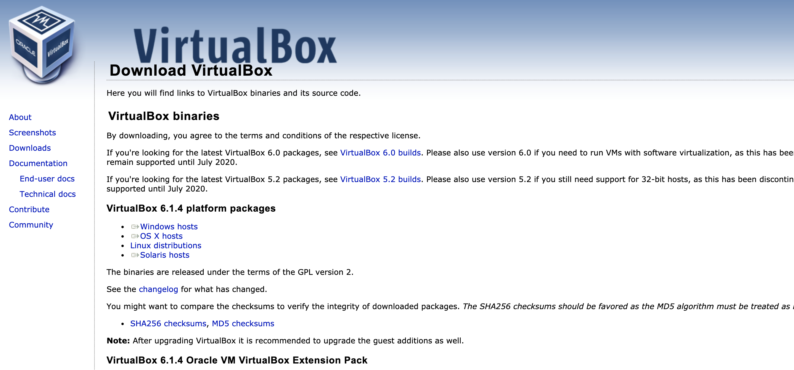
2. 가상 이미지 가져오기
- 구글 드라이버 URL
https://drive.google.com/open?id=1qAv-FyIWbQVIxNn3MKfjIwbVdvo4rxVl
3. 가상 이미지 가져오기
버추얼 박스 실행 후에 파일 > 가상이미지 가져오기 클릭

4. VM 설정
vm 이름, CPU 개수, MAC 주소 정책 을 아래와 같이 수정 합니다.
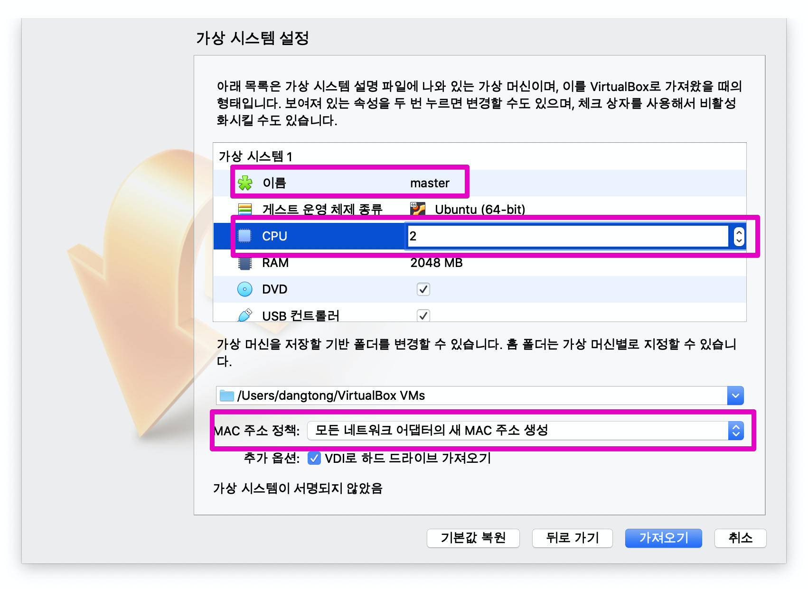
5. VM 복제
오른쪽마우스 -> 복제 클릭
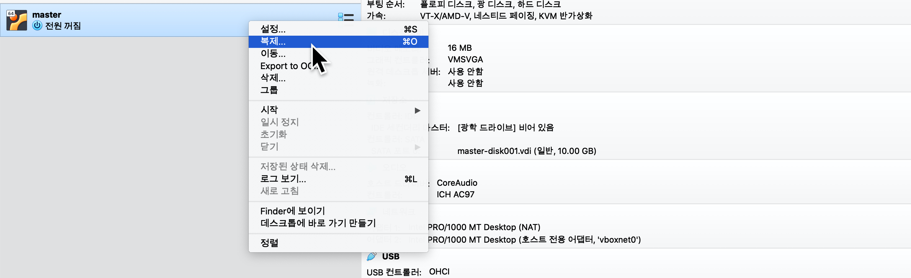
VM이름 및 MAC주소정책 변경 후 복제 클릭
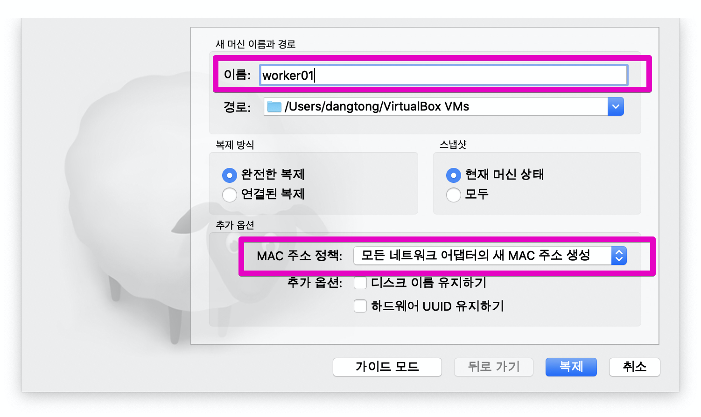
동일한 방법으로 worker02 VM 또 생성 합니다. 최종적으로 아래와 같이 3개의 VM 이 보이면 됩니다.
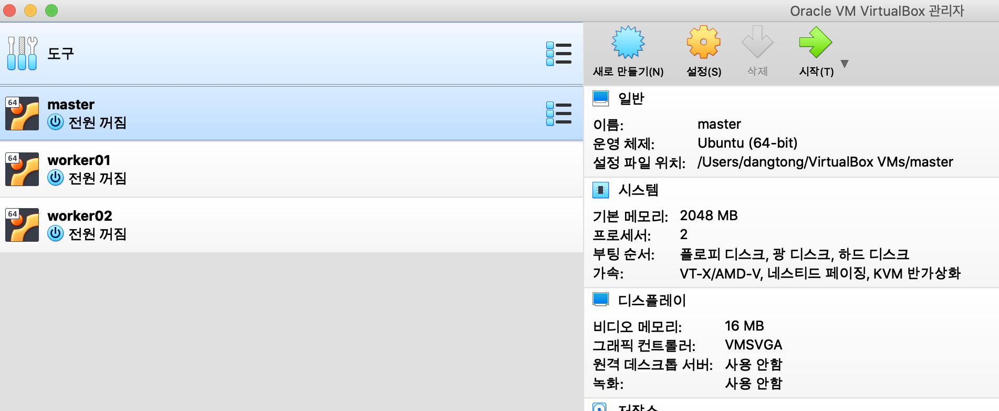
Appendix 1. 쿠버네티스 설치
1.설치 사전 작업
1.1 Nftable disable
sudo update-alternatives --set iptables /usr/sbin/iptables-legacy sudo update-alternatives --set ip6tables /usr/sbin/ip6tables-legacy sudo update-alternatives --set arptables /usr/sbin/arptables-legacy sudo update-alternatives --set ebtables /usr/sbin/ebtables-legacy
1.2 호스트명 변경
# hostnamectl set-hostname [FQDN-HOST-NAME] --static
hostnamectl set-hostname master
hostnamectl set-hostname master.sas.com --static
hostnamectl set-hostname worker1
hostnamectl set-hostname worker1.sas.com --static
hostnamectl set-hostname worker2
hostnamectl set-hostname worker2.sas.com --static
1.3 각노드에 호스트 파일 등록
172.31.43.23 master.sas.com master 172.31.42.202 worker1.sas.com worker1 172.31.32.175 worker2.sas.com worker2
1.4 방화벽 점검
1.4.1 Control Plane 노드
| Protocol | Direction | Port Range | Purpose | Used By |
|---|---|---|---|---|
| TCP | Inbound | 6443* | Kubernetes API server | All |
| TCP | Inbound | 2379-2380 | etcd server client API | kube-apiserver, etcd |
| TCP | Inbound | 10250 | Kubelet API | Self, Control plane |
| TCP | Inbound | 10251 | kube-scheduler | Self |
| TCP | Inbound | 10252 | kube-controller-manager | Self |
1.4.2 worker 노드
| Protocol | Direction | Port Range | Purpose | Used By |
|---|---|---|---|---|
| TCP | Inbound | 10250 | Kubelet API | Self, Control plane |
| TCP | Inbound | 30000-32767 | NodePort Services** | All |
2. Runtime 설치
2.1 도커 설치 (all nodes)
sudo apt update sudo apt install docker.io
2.2 kubernetes 설치 (all nodes)
설치 스크립트 클릭
sudo apt-get update && sudo apt-get install -y apt-transport-https curl curl -s https://packages.cloud.google.com/apt/doc/apt-key.gpg | sudo apt-key add - cat <<EOF | sudo tee /etc/apt/sources.list.d/kubernetes.list deb https://apt.kubernetes.io/ kubernetes-xenial main EOF sudo apt-get update sudo apt-get install -y kubelet kubeadm kubectl sudo apt-mark hold kubelet kubeadm kubectl
3. Post Installation
3.1 SWAP 기능 해제(all nodes)
sudo swapoff -a # 현재 일시적용 sudo sed -i '/swap/s/^/#/' /etc/fstab # 재가동 후에도 swapoff 할려면 수행 해야함
도커 데몬을 system 서비스에 등록하지 않으면 kubernetes 설치시에 warning 발생 하기 때문에 아래와 같이 등록해줌
# Setup daemon. cat > /etc/docker/daemon.json <<EOF { "exec-opts": ["native.cgroupdriver=systemd"], "log-driver": "json-file", "log-opts": { "max-size": "100m" }, "storage-driver": "overlay2" } EOF mkdir -p /etc/systemd/system/docker.service.d # Restart docker. systemctl enable docker.service systemctl daemon-reload systemctl restart docker
3.2 kubeadm을 사용하여 마스터 설정 (master node)
네트워크 인터페이스가 여러개일 경우 가장 우선 순위가 가장 높은 인터페이스가 자동 선정 되기 때문에 '--apiserver-advertise-address' 옵션을 사용해서 ip 혹은 인터페이스 명을 지정해야 합니다.
sudo kubeadm init --pod-network-cidr=192.168.0.0/16 --apiserver-advertise-address=192.168.56.108 # kubeadmin init 시에 여러 가지 옵션들 # --pod-network-cidr=192.168.0.0/16 # --control-plane-endpoint=192.168.56.108 # --apiserver-cert-extra-sans=192.168.56.108 # 잘못 설치한 경우 master 및 worker 노드에 수행 하면 모든 설정을 초기화함 # kubeadm reset cleanup-node
4. 워커 노드 등록
4.1 워커 노드 등록 (worker nodes)
반듯이 kubeadm init 을 통해 나온 로그에 표시된 ip 와 token 으로 worker 노드에서만 수행
kubeadm join 192.168.56.108:6443 --token dro5or.x9ujk49k0aadiz8s \ --discovery-token-ca-cert-hash sha256:b6372f30c5733a5c88d0a6b6095efbf4cb495329cbcd19df33e7a894a96ec53d
4.2 마스터 노드 kube client 설정
mkdir -p $HOME/.kube sudo cp -i /etc/kubernetes/admin.conf $HOME/.kube/config sudo chown $(id -u):$(id -g) $HOME/.kube/config
4.3 클러스터 상태 확인
결과가 모두 not ready 로 나옴
kubectl get nodes
4.4 네트워크 어플리케이션 설치
네트워크 툴 설치 후에는 모든 노드가 ready 로 나와야 함
kubectl apply -f "https://cloud.weave.works/k8s/net?k8s-version=$(kubectl version | base64 | tr -d '\n')" kubectl get nodes
4.5 kubectl 명령어 자동완성 패키지 설치
# 자동 완성을 bash 셸에 영구적으로 추가한다 echo "# k8s auto completion and alias" >> ~/.bashrc echo "source <(kubectl completion bash)" >> ~/.bashrc echo "alias k=kubectl" >> ~/.bashrc echo "complete -F __start_kubectl k" >> ~/.bashrc
5. etcd 설치
기본적으로 내장 etcd 가 있지만, etcd-io 의 릴리즈로 설치 합니다.
다운로드 url : 클릭
wget https://github.com/etcd-io/etcd/releases/download/v3.3.18/etcd-v3.3.18-linux-amd64.tar.gz tar -xf etcd-v3.3.18-linux-amd64.tar.gz cd etcd-v3.3.18-linux-amd64 sudo ETCDCTL_API=3 ./etcdctl --endpoints 127.0.0.1:2379 \ --cacert /etc/kubernetes/pki/etcd/ca.crt \ --cert /etc/kubernetes/pki/etcd/server.crt \ --key /etc/kubernetes/pki/etcd/server.key \ get / --prefix --keys-only
Appendix 2. 구글 GKE 사용하기
1. 회원가입
- $300 무료 크레딧 제공
- 신용카드 필요 (한도를 넘으도 자동 과금 안됨)
- http://cloud.google.com 에서 회원 가입
2. 프로젝트 생성
- 프로젝트 선택 을 클릭 합니다.
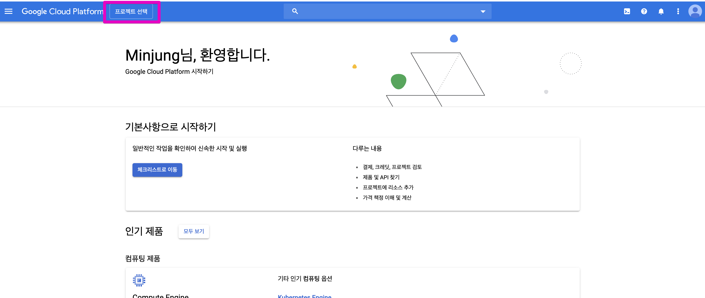
- 새 프로젝트 를 클릭 합니다.
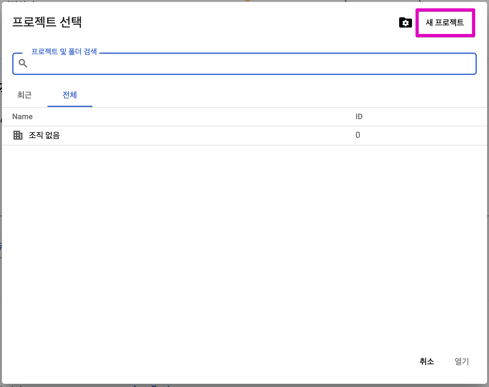
- 프로젝트 이름에 원하는 값을 입력하고 만들기 클릭
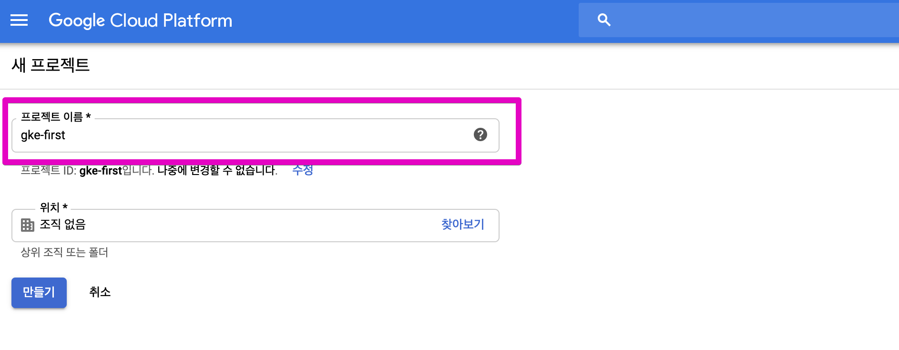
3. 쿠버네티스 클러스터 생성
- 홈메뉴 에서 Kubernetes Engine 클릭
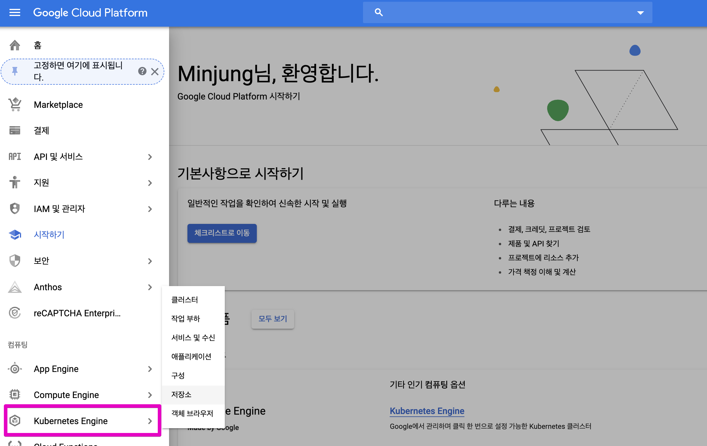
- 프로젝트를 선택하기 위해 프로젝트 선택 클릭
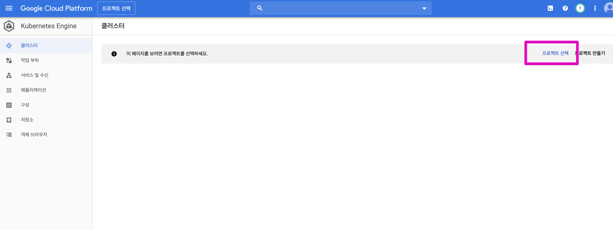
- 팝업창이 뜨면 프로젝트 gke-first 를 선택하고 열기 클릭
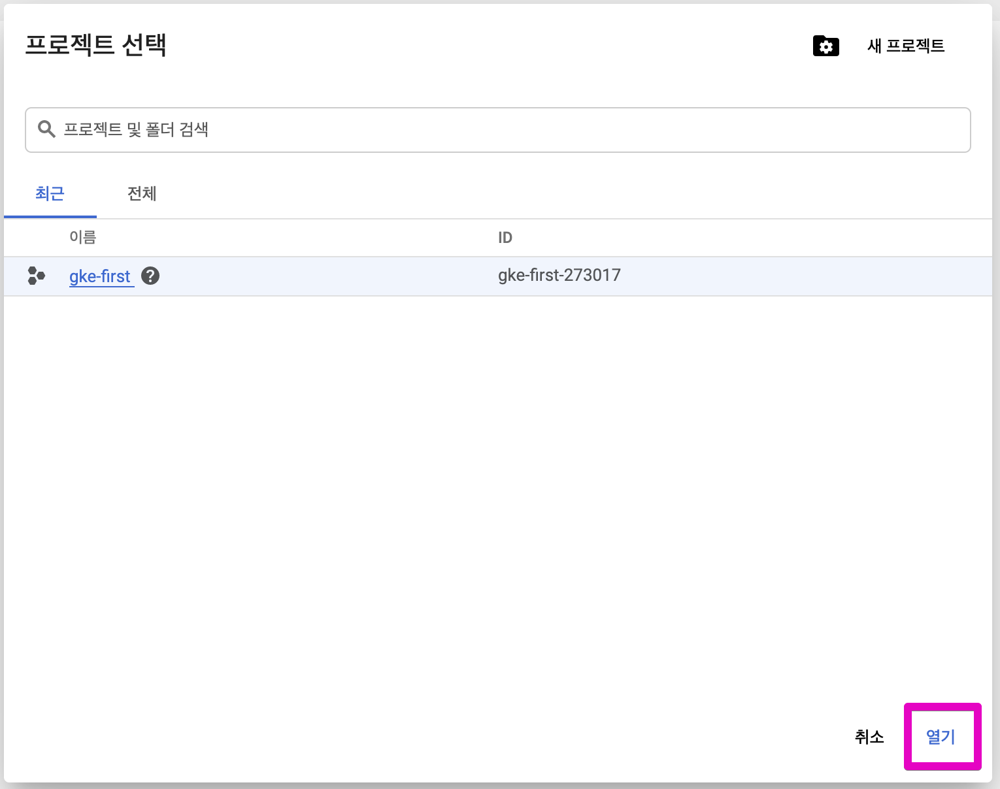
- 1분정도 기다린 후에 클러스터 만들기 클릭
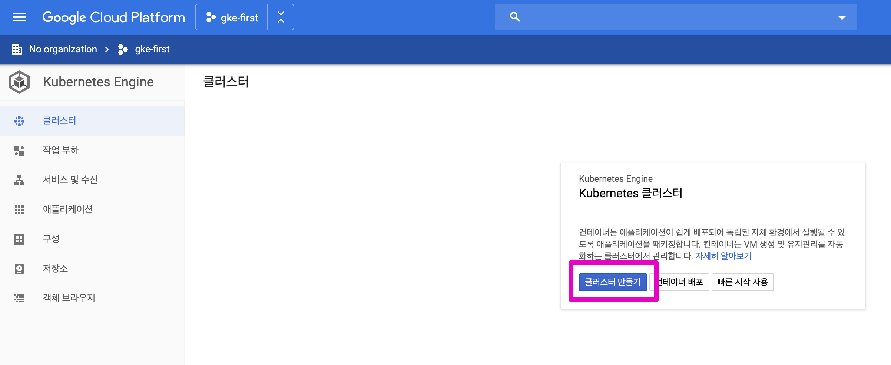
- 클러스터 기본사항 에서 영역을 "asia-east1-a" 로 선택 한후, 만들기 클릭
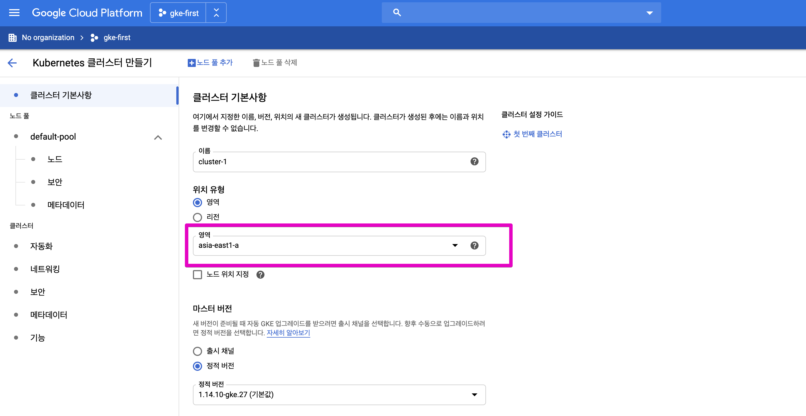
- 아래와 같이 k8s 클러스터를 생성 중인 화면이 나오면 정상 적으로 진행이 된 것입니다.
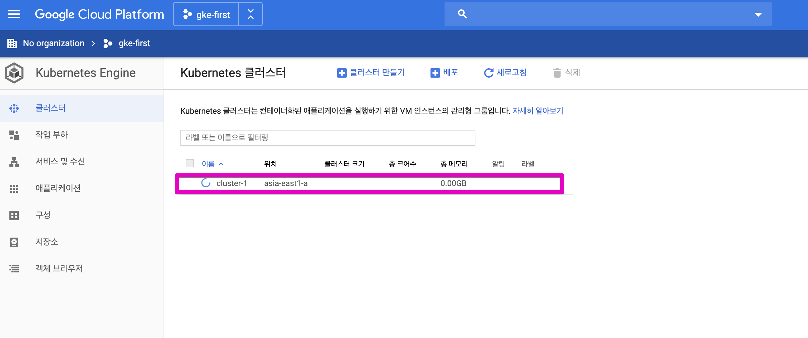
4. 쿠버네티스 클러스터 접속 테스트
- GKE 클러스터가 생성되면 연결 클릭
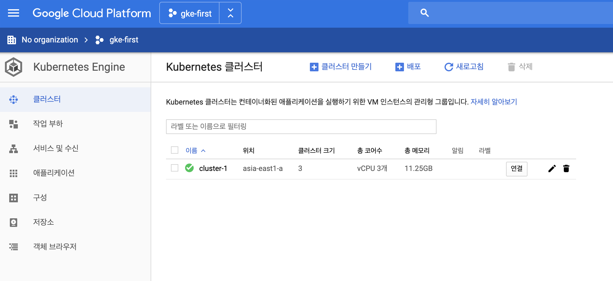
- 팝업창이 뜨면 Cloud Shell에서 실행 클릭
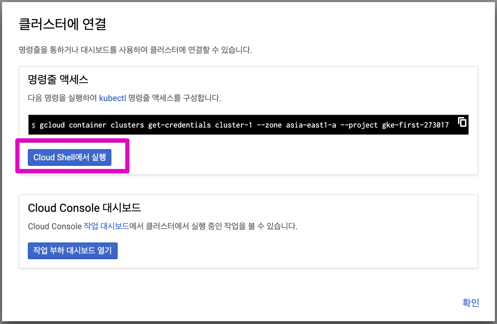
Appendix 3. Git 계정 생성 및 Sync
1.Git 계정생성
www.github.com 에서 계정 생성
2. Git 리포지토리 생성
- GitHub.com 에 자신의 계정으로 로그인하여 아래 화면과 같이 리포지토리 생성
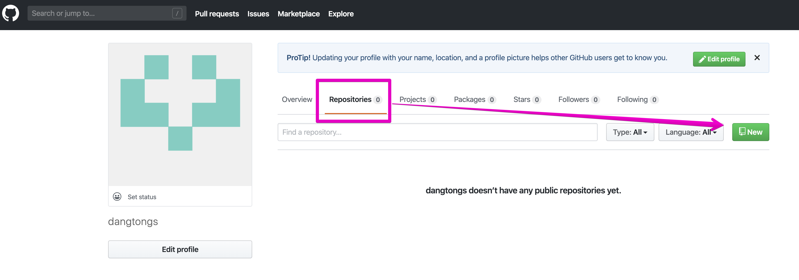
- 리포지토리 이름을 아래와 같이 입력하고. 생성 합니다. (Repository name : k8s-web)
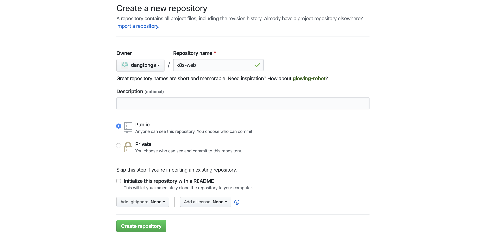
3. 소스 파일 작성
$ mkdir -p ./gitvolumn/html
$ mkdir -p ./gitvolumn/kubetmp
$ cd ./gitvolumn/html
$ vi index.html
index.html 이름으로 아래 페이지를 작성 합니다.
<!DOCTYPE html> <html> <body> <h1>K8s Landing Page</h1> <p>Hello Kubernetes !!!</p> </body> </html>
4. Git 리포지토리 생성 및 초기화
$ git init
$ git add .
$ git commit -a -m "first commit"
$ git remote add origin https://github.com/<계정명>/k8s-web.git
$ git remote -v
$ git push origin master
$ git status
Appendix 4. Persist Volume 서비스를 위한 Ceph 설치
1. Ceph 설치(worker01, worker02)
$ apt-cache search ceph $ apt install ceph